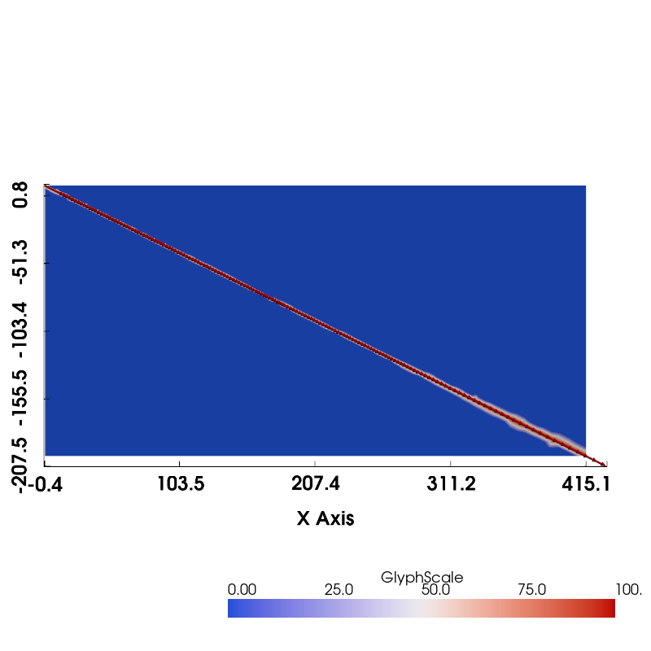
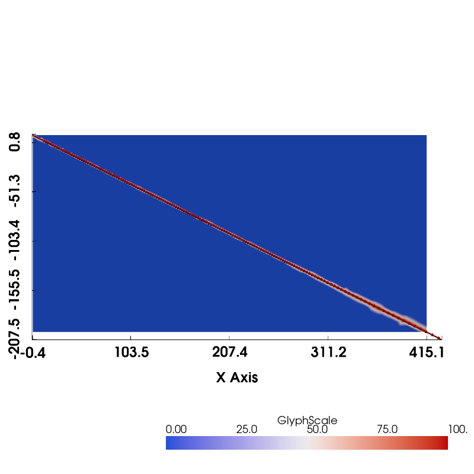
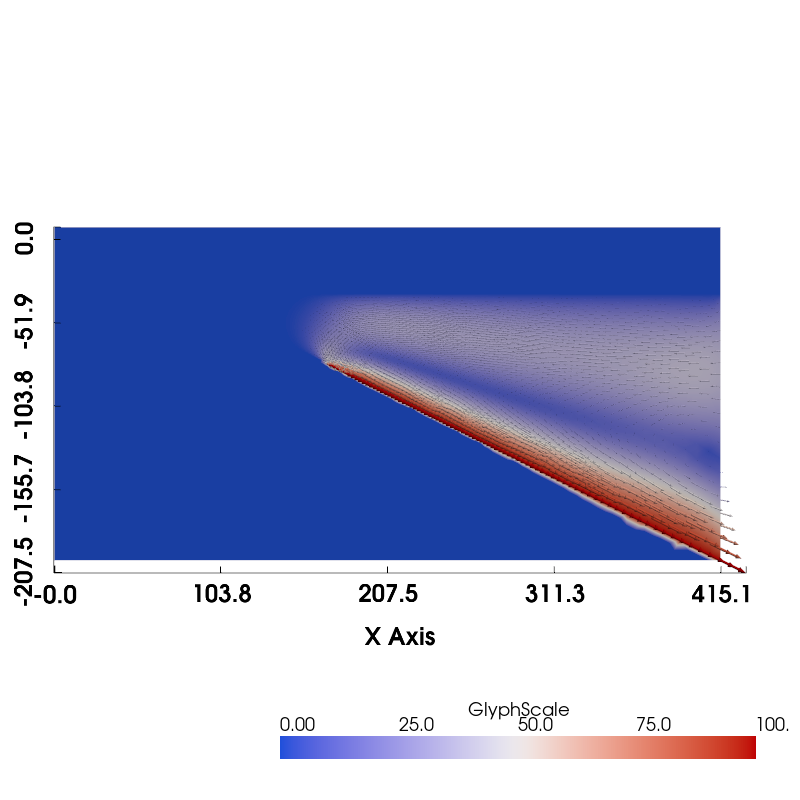
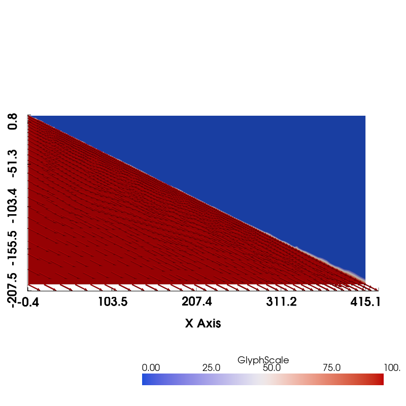
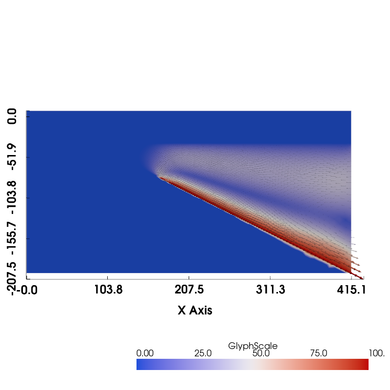
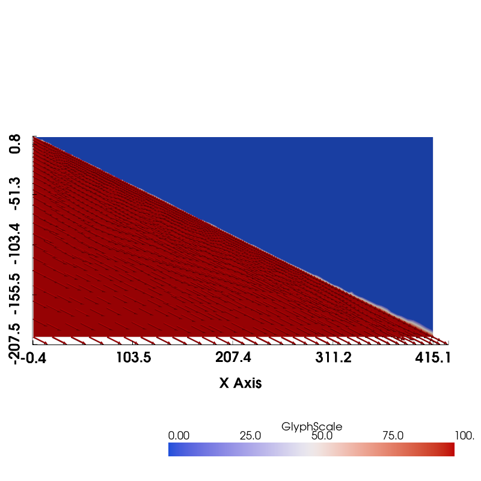

Subduction Zone Benchmark#
Intro to benchmark…
Implementation#
Preamble#
Let’s start by adding the path to the modules in the python folder to the system path. Also set the filename for the default parameters in the data directory.
import sys, os
sys.path.append(os.path.join(os.path.pardir, 'python'))
params_filename = os.path.join(os.pardir, "data", "default_params.json")
Then let’s load all the required modules at the beginning.
import geometry as geo
import utils
from mpi4py import MPI
import dolfinx as df
import dolfinx.fem.petsc
import numpy as np
import scipy as sp
import ufl
import basix.ufl as bu
import matplotlib.pyplot as pl
import json
import copy
Now we can load the default_params dictionary from file.
with open(params_filename, "r") as fp:
default_params = json.load(fp)
This contains default parameters required to define the geometry. Keys ending in _sid and _rid are surface and region IDs respectively that we use to identify boundaries and regions of the mesh (these are unlikely to need to be changed). *_res_fact are resolution factors scaled by a factor to set the resolution at various points in the mesh. Finally, those ending in _depth are depths (in km) of various important points along the slab surface or boundaries.
print("{:<35} {:<10}".format('Key','Value'))
print("-"*45)
for k, v in default_params.items():
print("{:<35} {:<10}".format(k, v))
Key Value
---------------------------------------------
slab_sid 1
slab_side_sid 2
wedge_side_sid 3
upper_wedge_side_sid 4
lc_side_sid 5
uc_side_sid 6
slab_base_sid 7
wedge_base_sid 8
lc_base_sid 9
uc_base_sid 10
coast_sid 11
top_sid 12
fault_sid 13
slab_diag_sid 14
slab_rid 1
wedge_rid 2
lc_rid 3
uc_rid 4
wedge_diag_rid 5
slab_det_depth 100.0
partial_coupling_depth 80.0
full_coupling_depth 82.5
slab_diag1_depth 70.0
slab_diag2_depth 120.0
partial_coupling_depth_res_fact 1.0
full_coupling_depth_res_fact 1.0
io_depth_res_fact 4.0
coast_res_fact 1.0
lc_side_res_fact 2.0
lc_slab_res_fact 1.0
slab_side_base_res_fact 8.0
uc_side_res_fact 2.0
uc_slab_res_fact 1.0
wedge_side_top_res_fact 4.0
wedge_side_base_res_fact 4.0
slab_diag1_res_fact 1.0
slab_diag2_res_fact 1.0
Describing the geometry#
Even in the simplified benchmark case, the geometry of a subduction zone is more complicated than any of the inbuilt meshes provided to us by dolfinx. In kinematic slab models we need to describe the slab and the surrounding domain around it, including crustal layers and surface features. We are particularly interested in the dynamics near the mantle wedge corner in the sub-arc region so will likely want to employ variable resolutions, with refined cells in this area. Luckily, finite elements excel at describing these more complicated, variable resolution geometries using unstructured meshes. We will start by describing the slab geometry.
Slab geometry#
In kinematic slab models the slab is typically described using a small number of points derived from seismic data which are then fitted with a spline to interpolate and extrapolate the geometry to other depths. We will use a cubic spline provided by the scipy module and wrapped for convenience in our own geometry.py python module. We need to provide the points describing the spline, some information about the resolution we desire in the mesh at various points along the spline, and information about some points that we require to be included in the spline. The most important of these are the partial and full coupling depths (partial_coupling_depth and full_coupling_depth in default_params respectively), which will later be used as the locations where the slab becomes fully coupled to the mantle wedge. These parameters are key in determining the subduction zone thermal structure. We also include a point at slab_det_depth that we use to extract diagnostic information.
We set up the slab using the function create_slab below.
def create_slab(xs, ys, resscale, lc_depth,
**kwargs):
"""
Function to construct and return a spline object that is used to describe a subducting slab
in a kinematic-slab model of a subduction zone. Optional keyword arguments default to parameters
in the global default_params dictionary if not specified.
Arguments:
* xs - list of x points in slab spline
* ys - list of y points in slab spline (must be the same length as xs)
* resscale - resolution scale factor that multiplies all _res_fact parameters
* lc_depth - depth of lower crustal boundary ("Moho")
Keyword Arguments:
distances:
* slab_diag1_depth - starting depth of slab diagnostic region
* slab_diag2_depth - end depth of slab diagnostic region
* partial_coupling_depth - partial coupling depth on slab
* full_coupling_depth - full coupling depth on slab
* slab_det_depth - detector depth on slab
resolutions factors (that get multiplied by the resscale to get the resolutions):
* slab_diag1_res_fact - start of slab diagnostic region
* slab_diag2_res_fact - end of slab diagnostic region
* partial_coupling_depth_res_fact - partial coupling depth on slab
* full_coupling_depth_res_fact - full coupling depth on slab
surface ids:
* fault_sid - fault
* slab_sid - default slab surface id
* slab_diag_sid - diagnostic region of slab
Returns:
* slab - subduction zone slab spline instance
"""
# get input parameters
# depths
slab_diag1_depth = kwargs.get('slab_diag1_depth', default_params['slab_diag1_depth'])
slab_diag2_depth = kwargs.get('slab_diag2_depth', default_params['slab_diag2_depth'])
partial_coupling_depth = kwargs.get('partial_coupling_depth', default_params['partial_coupling_depth'])
full_coupling_depth = kwargs.get('full_coupling_depth', default_params['full_coupling_depth'])
slab_det_depth = kwargs.get('slab_det_depth', default_params['slab_det_depth'])
# resolutions
slab_diag1_res = kwargs.get('slab_diag1_res_fact', default_params['slab_diag1_res_fact'])*resscale
slab_diag2_res = kwargs.get('slab_diag2_res_fact', default_params['slab_diag2_res_fact'])*resscale
partial_coupling_depth_res = kwargs.get('partial_coupling_depth_res_fact', default_params['partial_coupling_depth_res_fact'])*resscale
full_coupling_depth_res = kwargs.get('full_coupling_depth_res_fact', default_params['full_coupling_depth_res_fact'])*resscale
# surface ids
fault_sid = kwargs.get('fault_sid', default_params['fault_sid'])
slab_sid = kwargs.get('slab_sid', default_params['slab_sid'])
slab_diag_sid = kwargs.get('slab_diag_sid', default_params['slab_diag_sid'])
# set up resolutions along the slab depending on depth
# high resolution at shallow depths, lower resolution below the "diagnostic"
# region required in the benchmark case
# FIXME: these are currently hard-coded relative to the resolutions specified at the partial and full coupling
# depths for simplicity but could be separate parameters
res = [partial_coupling_depth_res if y >= -slab_diag2_depth else 3*full_coupling_depth_res for y in ys]
# set up the surface ids for the slab depending on depth
# above the "Moho" use fault_sid
# in the diagnostic region use the slab_diag_sid
# everywhere else use the default slab_sid
sids = []
for y in ys[1:]:
if y >= -lc_depth:
sid = fault_sid
elif y >= -slab_diag1_depth:
sid = slab_sid
elif y >= -slab_diag2_depth:
sid = slab_diag_sid
else:
sid = slab_sid
sids.append(sid)
# set up the slab spline object
slab = geo.SlabSpline(xs, ys, res=res, sid=sids, name="Slab")
assert full_coupling_depth > partial_coupling_depth
# adding the coupling depths may or may not be necessary
# depending on if they were included in the slab spline data already or not
# the slab class should ignore them if they aren't necessary
slab.addpoint(partial_coupling_depth, "Slab::PartialCouplingDepth",
res=partial_coupling_depth_res,
sid=slab_diag_sid)
slab.addpoint(full_coupling_depth, "Slab::FullCouplingDepth",
res=full_coupling_depth_res,
sid=slab_diag_sid)
# add the slab detector point
slab.addpoint(slab_det_depth, "Slab::DetectorPoint",
res=full_coupling_depth_res,
sid=slab_diag_sid)
# and return it
return slab
Describing the slab geometry only takes a few non-default parameters, which are relatively simple in the benchmark geometry.
Although the resolution of our mesh is going to vary across the domain we will use a resolution scale factor resscale to scale the resolution globally, while different points in the domain retain the same default relative resolutions. So a large resscale means low resolution and a small resscale means high resolution.
Computational cost
Setting the resscale too low will result in a computationally expensive simulation, especially in the non-linear case, that may need to be run locally rather than remotely.
resscale = 5.0
The benchmark slab geometry is rather simple, just consisting of a straight line with 2:1 horizontal distance to depth ratio, extending to 200km depth. We can therefore just provide the spline with a series of linearly related points xs and ys.
# points in slab (just linear)
xs = [0.0, 140.0, 240.0, 400.0]
ys = [0.0, -70.0, -120.0, -200.0]
To get the surface ids on the slab correct we also have to provide the lower crustal depth lc_depth. As this is a case dependent parameter it is not provided in default_params. For the benchmark cases it is at 40km depth.
lc_depth = 40
Providing these parameters we can create our slab geometry.
slab = create_slab(xs, ys, resscale, lc_depth)
We can double check that it looks as expected by plotting the slab, though in the benchmark case this is not very interesting!
interpx = [curve.points[0].x for curve in slab.interpcurves]
interpy = [curve.points[0].y for curve in slab.interpcurves]
pl.plot(interpx, interpy)
pl.gca().set_xlabel('x (km)')
pl.gca().set_ylabel('y (km)')
pl.gca().set_aspect('equal')
_ = pl.gca().set_title('Slab Geometry')
With the slab geometry in hand we can move onto defining the rest of the geometry.
Subduction zone geometry#
To describe the subduction zone geometry we need to build a two-dimensional domain around the slab spline. In the simplest case this is simply a rectangle around the spline but more generally will include a sloping coastline, a crust and potentially an upper crust if the slab is subducting beneath a continent. As with the spline we will also include certain important points in the domain and extra boundaries (lines) demarking special diagnostic regions of interest in the model. Also as with the spline we use a python class implemented in our own geometry.py module to do most of the work.
In the following function we use the slab object we instantiated above to provide the bounds and set up a base SubductionGeometry object, which will essentially describe the bounding domain with a sloping coastline if coast_distance > 0. The domain can also be set up to overshoot the lowermost end of the slab spline using the extra_width parameter. Crustal layers will then be added to the domain, controlled by the lc_depth, uc_depth and sztype parameters (with the latter controlling how many layers are added). The approximate point where the flow into and out of the wedge changes direction is included in the domain as specified by io_depth. Finally, we subdivide the wedge into a “diagnostic” region where certain benchmark values can be easily calculated. And, once again we use the same resscale parameter to scale the global resolution.
def create_sz_geometry(slab, resscale, sztype, io_depth, extra_width,
coast_distance, lc_depth, uc_depth,
**kwargs):
"""
Function to construct and return a subduction zone geometry object that is used to generate
a mesh of a subduction zone. Optional keyword arguments default to parameters in the global
default_params dictionary if not specified.
Arguments:
* slab - an instance of a slab spline object
* resscale - resolution scale factor that multiplies all _res_fact parameters
* sztype - either 'continental' or 'oceanic', which determines if an upper crust is included
* io_depth - prescribed input/output depth on wedge side
* extra_width - extra width at the base of the domain
* coast_distance - distance from trench to coast
* lc_depth - depth of lower crustal boundary ("Moho")
* uc_depth - depth of upper crustal boundary
Keyword Arguments:
distances:
* slab_diag1_depth - starting depth along slab of slab diagnostic region
* slab_diag2_depth - end depth along slab of slab diagnostic region
resolutions factors (that get multiplied by the resscale to get the resolutions):
* io_depth_res_fact - input/output depth
* coast_res_fact - coastal point on top
* lc_slab_res_fact - lower crust slab intersection
* lc_side_res_fact - lower crust side intersection
* uc_slab_res_fact - upper crust slab intersection
* uc_side_res_fact - upper crust side intersection
* slab_diag1_res_fact - start of slab diagnostic region
* slab_diag2_res_fact - end of slab diagnostic region
* wedge_side_top_res_fact - top of the wedge side
* wedge_side_base_res_fact - base of the wedge side
* slab_side_base_res_fact - base of the slab side
surface ids:
* coast_sid - coastal slope
* top_sid - top of domain
* fault_sid - fault
* lc_side_sid - side of lower crust
* lc_base_sid - base of lower crust
* uc_side_sid - side of upper crust
* uc_base_sid - base of upper crust
* slab_sid - default slab surface id
* slab_diag_sid - diagnostic region of slab
* slab_side_sid - side of slab
* wedge_side_sid - side of wedge
* upper_wedge_side_sid - side of upper wedge
* slab_base_sid - base of slab
* wedge_base_sid - base of wedge
region ids:
* slab_rid - slab
* wedge_rid - wedge
* lc_rid - lower crust
* uc_rid - upper crust
* wedge_diag_rid - wedge diagnostic region
Returns:
* geom - subduction zone geometry class instance
"""
# get input parameters
# depths
slab_diag1_depth = kwargs.get('slab_diag1_depth', default_params['slab_diag1_depth'])
slab_diag2_depth = kwargs.get('slab_diag2_depth', default_params['slab_diag2_depth'])
# resolutions
io_depth_res = kwargs.get('io_depth_res_fact', default_params['io_depth_res_fact'])*resscale
coast_res = kwargs.get('coast_res_fact', default_params['coast_res_fact'])*resscale
lc_slab_res = kwargs.get('lc_slab_res_fact', default_params['lc_slab_res_fact'])*resscale
lc_side_res = kwargs.get('lc_side_res_fact', default_params['lc_side_res_fact'])*resscale
uc_slab_res = kwargs.get('uc_slab_res_fact', default_params['uc_slab_res_fact'])*resscale
uc_side_res = kwargs.get('uc_side_res_fact', default_params['uc_side_res_fact'])*resscale
slab_diag1_res = kwargs.get('slab_diag1_res_fact', default_params['slab_diag1_res_fact'])*resscale
slab_diag2_res = kwargs.get('slab_diag2_res_fact', default_params['slab_diag2_res_fact'])*resscale
wedge_side_top_res = kwargs.get('wedge_side_top_res_fact', default_params['wedge_side_top_res_fact'])*resscale
wedge_side_base_res = kwargs.get('wedge_side_base_res_fact', default_params['wedge_side_base_res_fact'])*resscale
slab_side_base_res = kwargs.get('slab_side_base_res_fact', default_params['slab_side_base_res_fact'])*resscale
# surface ids
coast_sid = kwargs.get('coast_sid', default_params['coast_sid'])
top_sid = kwargs.get('top_sid', default_params['top_sid'])
fault_sid = kwargs.get('fault_sid', default_params['fault_sid'])
lc_side_sid = kwargs.get('lc_side_sid', default_params['lc_side_sid'])
lc_base_sid = kwargs.get('lc_base_sid', default_params['lc_base_sid'])
uc_side_sid = kwargs.get('uc_side_sid', default_params['uc_side_sid'])
uc_base_sid = kwargs.get('uc_base_sid', default_params['uc_base_sid'])
slab_sid = kwargs.get('slab_sid', default_params['slab_sid'])
slab_diag_sid = kwargs.get('slab_diag_sid', default_params['slab_diag_sid'])
slab_side_sid = kwargs.get('slab_side_sid', default_params['slab_side_sid'])
wedge_side_sid = kwargs.get('wedge_side_sid', default_params['wedge_side_sid'])
slab_base_sid = kwargs.get('slab_base_sid', default_params['slab_base_sid'])
wedge_base_sid = kwargs.get('wedge_base_sid', default_params['wedge_base_sid'])
upper_wedge_side_sid = kwargs.get('upper_wedge_side_sid', default_params['upper_wedge_side_sid'])
# region ids
slab_rid = kwargs.get('slab_rid', default_params['slab_rid'])
wedge_rid = kwargs.get('wedge_rid', default_params['wedge_rid'])
lc_rid = kwargs.get('lc_rid', default_params['lc_rid'])
uc_rid = kwargs.get('uc_rid', default_params['uc_rid'])
wedge_diag_rid = kwargs.get('wedge_diag_rid', default_params['wedge_diag_rid'])
assert sztype in ['continental', 'oceanic']
# pass the slab object into the SubductionGeometry class to construct the geometry
# around it
geom = geo.SubductionGeometry(slab,
coast_distance=coast_distance,
extra_width=extra_width,
slab_side_sid=slab_side_sid,
wedge_side_sid=wedge_side_sid,
slab_base_sid=slab_base_sid,
wedge_base_sid=wedge_base_sid,
coast_sid=coast_sid,
top_sid=top_sid,
slab_rid=slab_rid,
wedge_rid=wedge_rid,
coast_res=coast_res,
slab_side_base_res=slab_side_base_res,
wedge_side_top_res=wedge_side_top_res,
wedge_side_base_res=wedge_side_base_res)
if sztype=='oceanic':
# add a single crust layer
# (using the lc parameters & ignoring the uc ones)
geom.addcrustlayer(lc_depth, "Crust",
sid=lc_base_sid, rid=lc_ris,
slab_res=lc_slab_res,
side_res=lc_side_res,
slab_sid=fault_sid,
side_sid=lc_side_sid)
else:
# add a lower crust
geom.addcrustlayer(lc_depth, "Crust",
sid=lc_base_sid, rid=lc_rid,
slab_res=lc_slab_res,
side_res=lc_side_res,
slab_sid=fault_sid,
side_sid=lc_side_sid)
# add an upper crust
geom.addcrustlayer(uc_depth, "UpperCrust",
sid=uc_base_sid, rid=uc_rid,
slab_res=uc_slab_res,
side_res=uc_side_res,
slab_sid=fault_sid,
side_sid=uc_side_sid)
# add the pre-defined in-out point on the wedge side
geom.addwedgesidepoint(io_depth, "WedgeSide::InOut", line_name="UpperWedgeSide",
res=io_depth_res,
sid=upper_wedge_side_sid)
# add wedge dividers for the diagnostics
geom.addwedgedivider(slab_diag1_depth, "ColdCorner",
slab_res=slab_diag2_res,
top_res=slab_diag2_res,
rid=wedge_rid,
slab_sid=slab_sid)
# add wedge dividers for the diagnostics
geom.addwedgedivider(slab_diag2_depth, "WedgeFocused",
slab_res=slab_diag1_res,
top_res=slab_diag1_res,
rid=wedge_diag_rid,
slab_sid=slab_diag_sid)
# return the geometry object
return geom
For the benchmark cases we do not include a coastline or any extra width beyond the slab so coast_distance = 0 and extra_width = 0. The subduction zone “type” is continental (sztype = "continental"), which means we need to set an upper crustal depth, which in the benchmark is 40km, uc_depth = 40. lc_depth was already set when describing the slab.
coast_distance = 0
extra_width = 0
uc_depth = 15
sztype = 'continental'
The input/output depth varies between the isoviscous (case 1) and nonlinear (case 2) benchmarks. We choose the value from case 1 here.
io_depth_1 = 139
Leaving all other parameters as their default values we can now instantiate a subduction zone geometry object.
geom = create_sz_geometry(slab, resscale, sztype, io_depth_1, extra_width,
coast_distance, lc_depth, uc_depth)
And examine it to see if it looks correct.
geom.plot(label_sids=False, label_rids=False)

The finished geometry object can now be used to generate the mesh we will use to solve our numerical problem. To do this we are using GMsh in the background, which can generate a lot of output.
Once the mesh (mesh) and mesh tag objects (cell_tags and facet_tags) are generated we can visualize the resulting unstructured triangular mesh.
It’s also possible to output the geometry to file using
geom.writegeofile('<file base name>.geo_unrolled')
With the geometry (and mesh!) in hand it’s possible to move onto describing the physical problem we want to solve.
Kinematic slab model#
class SubductionProblem:
"""
A class describing a kinematic slab subduction zone thermal problem.
"""
# geometry object
geom = None
# case specific
A = None # age of subducting slab (Myr)
Vs = None # slab speed (mm/yr)
sztype = None # type of sz ('continental' or 'oceanic')
Ac = None # age of over-riding plate (Myr) - oceanic only
As = None # age of subduction (Myr) - oceanic only
qs = None # surface heat flux (W/m^2) - continental only
# non-dim parameters
Ts = 0.0 # surface temperature (non-dim, also deg C)
Tm = 1350.0 # mantle temperature (non-dim, also deg C)
kc = 0.8064516 # crustal thermal conductivity (non-dim)
km = 1.0 # mantle thermal conductivity (non-dim)
rhoc = 0.8333333 # crustal density (non-dim)
rhom = 1.0 # mantle density (non-dim)
cp = 1.0 # heat capacity (non-dim)
H1 = 0.419354 # upper crustal volumetric heat production (non-dim)
H2 = 0.087097 # lower crustal volumetric heat production (non-dim)
# dislocation creep parameters
etamax = 1.0e25 # maximum viscosity (Pa s)
nsigma = 3.5 # stress viscosity power law exponent (non-dim)
Aeta = 28968.6 # pre-exponential viscosity constant (Pa s^(1/n))
E = 540.0e3 # viscosity activation energy (J/mol)
# finite element degrees
p_p = 1
p_T = 2
# only allow these options to be set from the update and __init__ functions
allowed_input_parameters = ['A', 'Vs', 'sztype', 'Ac', 'As', 'qs', \
'Ts', 'Tm', 'kc', 'km', 'rhoc', 'rhom', 'cp', 'H1', 'H2', \
'etamax', 'nsigma', 'Aeta', 'E', \
'p_p', 'p_T']
required_parameters = ['A', 'Vs', 'sztype']
required_if_continental = ['qs']
required_if_oceanic = ['Ac', 'As']
# reference values
k0 = 3.1 # reference thermal conductivity (W/m/K)
rho0 = 3300.0 # reference density (kg/m^3)
cp0 = 1250.0 # reference heat capacity (J/kg/K)
h0 = 1000.0 # reference length scale (m)
eta0 = 1.0e21 # reference viscosity (Pa s)
T0 = 1.0 # reference temperature (K)
R = 8.3145 # gas constant (J/mol/K)
# derived reference values
kappa0 = None # reference thermal diffusivity (m^2/s)
v0 = None # reference velocity (m/s)
e0 = None # reference strain rate (/s)
p0 = None # reference pressure (Pa)
H0 = None # reference heat source (W/m^3)
q0 = None # reference heat flux (W/m^2)
# derived parameters
A_si = None # age of subducting slab (s)
Vs_nd = None # slab speed (non-dim)
Ac_si = None # age of over-riding plate (s) - oceanic only
As_si = None # age of subduction (s) - oceanic only
qs_nd = None # surface heat flux (non-dim) - continental only
# from geometry
deltaztrench = None
deltaxcoast = None
deltazuc = None
deltazc = None
# mesh related
mesh = None
cell_tags = None
facet_tags = None
gdim = None
tdim = None
fdim = None
num_cells = None
# integral measures
dx = None
dS = None
# region ids
wedge_rids = None
slab_rids = None
crust_rids = None
# wedge submesh
wedge_submesh = None
wedge_cell_tags = None
wedge_facet_tags = None
wedge_cell_map = None
wedge_reverse_cell_map = None
# slab submesh
slab_submesh = None
slab_cell_tags = None
slab_facet_tags = None
slab_cell_map = None
slab_reverse_cell_map = None
# functionspaces
Vslab_vp = None
Vslab_v = None
Vwedge_vp = None
Vwedge_v = None
V_T = None
# functions
slab_vps_i = None
wedge_vpw_i = None
T_i = None
# functions that need interpolation
vs_i = None
ps_i = None
vw_i = None
pw_i = None
slab_T_i = None
wedge_T_i = None
# sub (split) functions
slab_vs_i = None
slab_ps_i = None
wedge_vw_i = None
wedge_pw_i = None
# test functions
slab_vps_t = None
wedge_vw_i = None
T_t = None
# trial functions
slab_vps_a = None
wedge_vpw_a = None
T_a = None
# boundary conditions
bcs_T = None # temperature
bcs_vpw = None # wedge velocity/pressure
bcs_vps = None # slab velocity/pressure
class SubductionProblem(SubductionProblem):
def setup_meshes(self):
"""
Generate the mesh from the supplied geometry then extract submeshes representing
the wedge and slab for the Stokes problems in these regions.
"""
# check we have a geometry object attached
assert self.geom is not None
# generate the mesh using gmsh
# this command also returns cell and facets tags identifying regions and boundaries in the mesh
self.mesh, self.cell_tags, self.facet_tags = self.geom.generatemesh()
# record the dimensions
self.gdim = self.mesh.geometry.dim
self.tdim = self.mesh.topology.dim
self.fdim = self.tdim - 1
self.dx = ufl.Measure("dx", domain=self.mesh, subdomain_data=self.cell_tags)
self.dS = ufl.Measure("dS", domain=self.mesh, subdomain_data=self.facet_tags)
# get the number of cells
cell_imap = self.mesh.topology.index_map(self.tdim)
self.num_cells = cell_imap.size_local + cell_imap.num_ghosts
# record the region ids for the wedge, slab and crust based on the geometry
self.wedge_rids = tuple(set([v['rid'] for k,v in self.geom.wedge_dividers.items()]+[self.geom.wedge_rid]))
self.slab_rids = tuple([geom.slab_rid])
self.crust_rids = tuple(set([v['rid'] for k,v in geom.crustal_layers.items()]))
# generate the wedge submesh
# this command also returns cell and facet tags mapped from the parent mesh to the submesh
# additionally a cell map maps cells in the submesh to the parent mesh
self.wedge_submesh, self.wedge_cell_tags, self.wedge_facet_tags, self.wedge_cell_map = \
utils.create_submesh(self.mesh, np.concatenate([self.cell_tags.find(rid) for rid in self.wedge_rids]), \
self.cell_tags, self.facet_tags)
# create a reverse cell map from the parent mesh to the submesh
# (entering -1s in the map where no cell exists in the submesh)
self.wedge_reverse_cell_map = np.full(self.num_cells, -1, dtype=np.int32)
self.wedge_reverse_cell_map[self.wedge_cell_map] = np.arange(len(self.wedge_cell_map))
# generate the slab submesh
# this command also returns cell and facet tags mapped from the parent mesh to the submesh
# additionally a cell map maps cells in the submesh to the parent mesh
self.slab_submesh, self.slab_cell_tags, self.slab_facet_tags, self.slab_cell_map = \
utils.create_submesh(self.mesh, np.concatenate([self.cell_tags.find(rid) for rid in self.slab_rids]), \
self.cell_tags, self.facet_tags)
# create a reverse cell map from the parent mesh to the submesh
# (entering -1s in the map where no cell exists in the submesh)
self.slab_reverse_cell_map = np.full(self.num_cells, -1, dtype=np.int32)
self.slab_reverse_cell_map[self.slab_cell_map] = np.arange(len(self.slab_cell_map))
class SubductionProblem(SubductionProblem):
def setup_functionspaces(self):
"""
Set up the functionspaces for the problem.
"""
# create finite elements for velocity and pressure
# use a P2P1 (Taylor-Hood) element pair where the velocity
# degree is one higher than the pressure (so only the pressure
# degree can be set)
v_e = bu.element("Lagrange", self.mesh.basix_cell(), self.p_p+1, shape=(self.gdim,), dtype=df.default_real_type)
p_e = bu.element("Lagrange", self.mesh.basix_cell(), self.p_p, dtype=df.default_real_type)
# combine them into a mixed finite element
vp_e = bu.mixed_element([v_e, p_e])
def create_vp_functions(mesh, name_prefix):
"""
Create velocity and pressure functions
"""
# set up the mixed velocity, pressure functionspace
V_vp = df.fem.functionspace(mesh, vp_e)
# set up a collapsed velocity functionspace
V_v, _ = V_vp.sub(0).collapse()
# set up a mixed velocity, pressure function
vp_i = df.fem.Function(V_vp)
vp_i.name = name_prefix+"vp"
# split the velocity and pressure subfunctions
(v_i, p_i) = vp_i.split()
v_i.name = name_prefix+"v"
p_i.name = name_prefix+"p"
# set up the mixed velocity, pressure test function
vp_t = ufl.TestFunction(V_vp)
# set up the mixed velocity, pressure trial function
vp_a = ufl.TrialFunction(V_vp)
# return everything
return V_vp, V_v, vp_i, v_i, p_i, vp_t, vp_a
# set up slab functionspace, collapsed velocity sub-functionspace,
# combined velocity-pressure Function, split velocity and pressure Functions,
# and trial and test functions for
# 1. the slab submesh
self.Vslab_vp, self.Vslab_v, \
self.slab_vps_i, \
self.slab_vs_i, self.slab_ps_i, \
self.slab_vps_t, self.slab_vps_a = create_vp_functions(self.slab_submesh, "slab_")
# 2. the wedge submesh
self.Vwedge_vp, self.Vwedge_v, \
self.wedge_vpw_i, \
self.wedge_vw_i, self.wedge_pw_i, \
self.wedge_vpw_t, self.wedge_vpw_a = create_vp_functions(self.wedge_submesh, "slab_")
# set up the mixed velocity, pressure functionspace (not stored)
V_vp = df.fem.functionspace(self.mesh, vp_e)
V_v, _ = V_vp.sub(0).collapse()
V_p, _ = V_vp.sub(1).collapse()
# set up functions defined on the whole mesh
# to interpolate the wedge and slab velocities
# and pressures to
self.vs_i = df.fem.Function(V_v)
self.vs_i.name = "vs"
self.ps_i = df.fem.Function(V_p)
self.ps_i.name = "ps"
self.vw_i = df.fem.Function(V_v)
self.vw_i.name = "vw"
self.pw_i = df.fem.Function(V_p)
self.pw_i.name = "pw"
# temperature element
# the degree of the element can be set independently through p_T
T_e = bu.element("Lagrange", self.mesh.basix_cell(), self.p_T, dtype=df.default_real_type)
# and functionspace on the overall mesh
self.V_T = df.fem.functionspace(self.mesh, T_e)
# create a dolfinx Function for the temperature
self.T_i = df.fem.Function(self.V_T)
self.T_i.name = "T"
self.T_t = ufl.TestFunction(self.V_T)
self.T_a = ufl.TrialFunction(self.V_T)
# on the slab submesh
Vslab_T = df.fem.functionspace(self.slab_submesh, T_e)
# and on the wedge submesh
Vwedge_T = df.fem.functionspace(self.wedge_submesh, T_e)
# set up Functions so the solution can be interpolated to these subdomains
self.slab_T_i = df.fem.Function(Vslab_T)
self.slab_T_i.name = "slab_T"
self.wedge_T_i = df.fem.Function(Vwedge_T)
self.wedge_T_i.name = "wedge_T"
class SubductionProblem(SubductionProblem):
def update_T_functions(self):
"""
Update the temperature functions defined on the submeshes, given a solution on the full mesh.
"""
self.slab_T_i.interpolate(self.T_i, cell_map=self.slab_cell_map)
self.wedge_T_i.interpolate(self.T_i, cell_map=self.wedge_cell_map)
def update_v_functions(self):
"""
Update the velocity functions defined on the full mesh, given solutions on the sub meshes.
"""
self.vs_i.interpolate(self.slab_vs_i, cells=self.slab_cell_map, cell_map=self.slab_reverse_cell_map)
self.vw_i.interpolate(self.wedge_vw_i, cells=self.wedge_cell_map, cell_map=self.wedge_reverse_cell_map)
def update_p_functions(self):
"""
Update the pressure functions defined on the full mesh, given solutions on the sub meshes.
"""
self.ps_i.interpolate(self.slab_ps_i, cells=self.slab_cell_map, cell_map=self.slab_reverse_cell_map)
self.pw_i.interpolate(self.wedge_pw_i, cells=self.wedge_cell_map, cell_map=self.wedge_reverse_cell_map)
class SubductionProblem(SubductionProblem):
def T_trench(self, x):
"""
Return temperature at the trench
"""
zd = 2*np.sqrt(self.kappa0*self.A_si)/self.h0 # incoming slab scale depth (non-dim)
deltazsurface = np.minimum(np.maximum(self.deltaztrench*(1.0 - x[0,:]/max(self.deltaxcoast, np.finfo(float).eps)), 0.0), self.deltaztrench)
return self.Ts + (self.Tm-self.Ts)*sp.special.erf(-(x[1,:]+deltazsurface)/zd)
class SubductionProblem(SubductionProblem):
def T_backarc_o(self, x):
"""
Return temperature at the trench
"""
zc = 2*np.sqrt(self.kappa0*(self.Ac_si-self.As_si))/self.h0 # overriding plate scale depth (non-dim)
deltazsurface = np.minimum(np.maximum(self.deltaztrench*(1.0 - x[0,:]/max(self.deltaxcoast, np.finfo(float).eps)), 0.0), self.deltaztrench)
return self.Ts + (self.Tm-self.Ts)*sp.special.erf(-(x[1,:]+deltazsurface)/zc)
class SubductionProblem(SubductionProblem):
def T_backarc_c(self, x):
"""
Return continental backarc temperature
"""
T = np.empty(x.shape[1])
deltazsurface = np.minimum(np.maximum(self.deltaztrench*(1.0 - x[0,:]/max(self.deltaxcoast, np.finfo(float).eps)), 0.0), self.deltaztrench)
for i in range(x.shape[1]):
if -(x[1,i]+deltazsurface[i]) < self.deltazuc:
# if in the upper crust
deltaz = -(x[1,i]+deltazsurface[i])
T[i] = self.Ts - self.H1*(deltaz**2)/(2*self.kc) + (self.qs_nd/self.kc)*deltaz
elif -(x[1,i]+deltazsurface[i]) < self.deltazc:
# if in the lower crust
deltaz1 = self.deltazuc #- deltazsurface[i]
T1 = self.Ts - self.H1*(deltaz1**2)/(2*self.kc) + (self.qs_nd/self.kc)*deltaz1
q1 = - self.H1*deltaz1 + self.qs_nd
deltaz = -(x[1,i] + deltazsurface[i] + self.deltazuc)
T[i] = T1 - self.H2*(deltaz**2)/(2*self.kc) + (q1/self.kc)*deltaz
else:
# otherwise, we're in the mantle
deltaz1 = self.deltazuc # - deltazsurface[i]
T1 = self.Ts - self.H1*(deltaz1**2)/(2*self.kc) + (self.qs_nd/self.kc)*deltaz1
q1 = - self.H1*deltaz1 + self.qs_nd
deltaz2 = self.deltazc - self.deltazuc #- deltazsurface[i]
T2 = T1 - self.H2*(deltaz2**2)/(2*self.kc) + (q1/self.kc)*deltaz2
q2 = - self.H2*deltaz2 + q1
deltaz = -(x[1,i] + deltazsurface[i] + self.deltazc)
T[i] = min(self.Tm, T2 + (q2/self.km)*deltaz)
return T
class SubductionProblem(SubductionProblem):
def vw_slabtop(self, x):
"""
Return the wedge velocity on the slab surface
"""
# grab the partial and full coupling depths so we can set up a linear ramp in velocity between them
pcd = -self.geom.slab_spline.findpoint("Slab::PartialCouplingDepth").y
fcd = -self.geom.slab_spline.findpoint("Slab::FullCouplingDepth").y
dcd = fcd-pcd
v = np.empty((self.gdim, x.shape[1]))
for i in range(x.shape[1]):
v[:,i] = min(max(-(x[1,i]+pcd)/dcd, 0.0), 1.0)*self.Vs_nd*self.geom.slab_spline.unittangentx(x[0,i])
return v
class SubductionProblem(SubductionProblem):
def vs_slabtop(self, x):
"""
Return the slab velocity on the slab surface
"""
v = np.empty((self.gdim, x.shape[1]))
for i in range(x.shape[1]):
v[:,i] = self.Vs_nd*self.geom.slab_spline.unittangentx(x[0,i])
return v
class SubductionProblem(SubductionProblem):
def setup_boundaryconditions(self):
"""
Set the boundary conditions and apply them to the functions
"""
# locate the degrees of freedom (dofs) where various boundary conditions will be applied
# on the top of the wedge for the wedge velocity
wedgetop_dofs_Vwedge_v = df.fem.locate_dofs_topological((self.Vwedge_vp.sub(0), self.Vwedge_v), self.fdim,
np.concatenate([self.wedge_facet_tags.find(sid) for sid in set([line.pid for line in self.geom.crustal_lines[0]])]))
# on the slab surface for the slab velocity
slab_dofs_Vslab_v = df.fem.locate_dofs_topological((self.Vslab_vp.sub(0), self.Vslab_v), self.fdim,
np.concatenate([self.slab_facet_tags.find(sid) for sid in set(self.geom.slab_spline.pids)]))
# on the slab surface for the wedge velocity
slab_dofs_Vwedge_v = df.fem.locate_dofs_topological((self.Vwedge_vp.sub(0), self.Vwedge_v), self.fdim,
np.concatenate([self.wedge_facet_tags.find(sid) for sid in set(self.geom.slab_spline.pids)]))
# on the top of the domain for the temperature
top_dofs_V_T = df.fem.locate_dofs_topological(self.V_T, self.fdim,
np.concatenate([self.facet_tags.find(self.geom.coast_sid), self.facet_tags.find(self.geom.top_sid)]))
# on the side of the slab side of the domain for the temperature
slabside_dofs_V_T = df.fem.locate_dofs_topological(self.V_T, self.fdim,
np.concatenate([self.facet_tags.find(sid) for sid in set([line.pid for line in self.geom.slab_side_lines])]))
# on the side of the wedge side of the domain for the temperature
wedgeside_dofs_V_T = df.fem.locate_dofs_topological(self.V_T, self.fdim,
np.concatenate([self.facet_tags.find(sid) for sid in set([line.pid for line in self.geom.wedge_side_lines[1:]])]))
# temperature boundary conditions
self.bcs_T = []
# zero on the top of the domain
zero_c = df.fem.Constant(self.mesh, df.default_scalar_type(0.0))
self.bcs_T.append(df.fem.dirichletbc(zero_c, top_dofs_V_T, self.V_T))
# an incoming slab thermal profile on the lhs of the domain
T_trench_f = df.fem.Function(self.V_T)
T_trench_f.interpolate(self.T_trench)
self.bcs_T.append(df.fem.dirichletbc(T_trench_f, slabside_dofs_V_T))
# on the top (above iodepth) of the incoming wedge side of the domain
if self.sztype=='continental':
T_backarc_f = df.fem.Function(self.V_T)
T_backarc_f.interpolate(self.T_backarc_c)
self.bcs_T.append(df.fem.dirichletbc(T_backarc_f, wedgeside_dofs_V_T))
else:
T_backarc_f = df.fem.Function(self.V_T)
T_backarc_f.interpolate(self.T_backarc_o)
self.bcs_T.append(df.fem.dirichletbc(T_backarc_f, wedgeside_dofs_V_T))
# wedge velocity (and pressure) boundary conditions
self.bcs_vpw = []
# zero velocity on the top of the wedge
zero_vw_f = df.fem.Function(self.Vwedge_v)
zero_vw_f.x.array[:] = 0.0
self.bcs_vpw.append(df.fem.dirichletbc(zero_vw_f, wedgetop_dofs_Vwedge_v, self.Vwedge_vp.sub(0)))
# kinematic slab on the slab surface of the wedge
vw_slabtop_f = df.fem.Function(self.Vwedge_v)
vw_slabtop_f.interpolate(self.vw_slabtop)
self.bcs_vpw.append(df.fem.dirichletbc(vw_slabtop_f, slab_dofs_Vwedge_v, self.Vwedge_vp.sub(0)))
# slab velocity (and pressure) boundary conditions
self.bcs_vps = []
# kinematic slab on the slab surface of the slab
vs_slabtop_f = df.fem.Function(self.Vslab_v)
vs_slabtop_f.interpolate(self.vs_slabtop)
self.bcs_vps.append(df.fem.dirichletbc(vs_slabtop_f, slab_dofs_Vslab_v, self.Vslab_vp.sub(0)))
# interpolate the temperature boundary conditions as initial conditions/guesses
# to the whole domain (not just the boundaries)
# on the wedge and crust side of the domain apply the wedge condition
nonslab_cells = np.concatenate([self.cell_tags.find(rid) for domain in [self.crust_rids, self.wedge_rids] for rid in domain])
self.T_i.interpolate(T_backarc_f, cells=nonslab_cells)
# on the slab side of the domain apply the slab condition
slab_cells = np.concatenate([self.cell_tags.find(rid) for rid in self.slab_rids])
self.T_i.interpolate(T_trench_f, cells=slab_cells)
# update the interpolated T functions for consistency
self.update_T_functions()
# just set the boundary conditions on the boundaries for the velocities
df.fem.set_bc(self.wedge_vpw_i.x.array, self.bcs_vpw)
df.fem.set_bc(self.slab_vps_i.x.array, self.bcs_vps)
# and update the interpolated v functions for consistency
self.update_v_functions()
class SubductionProblem(SubductionProblem):
def update(self, geom=None, **kwargs):
"""
Update the subduction problem with the allowed input parameters
"""
# loop over the keyword arguments and apply any that are allowed as input parameters
for k,v in kwargs.items():
if k in self.allowed_input_parameters and hasattr(self, k):
setattr(self, k, v)
# check required parameters are set
for param in self.required_parameters:
value = getattr(self, param)
if value is None:
raise Exception("'{}' must be set but isn't. Please supply a value.".format(param,))
# check sztype dependent required parameters are set
if self.sztype == "continental":
for param in self.required_if_continental:
value = getattr(self, param)
if value is None:
raise Exception("'{}' must be set if the sztype is continental. Please supply a value.".format(param,))
elif self.sztype == "oceanic":
for param in self.required_if_oceanic:
value = getattr(self, param)
if value is None:
raise Exception("'{}' must be set if the sztype is oceanic. Please supply a value.".format(param,))
else:
raise Exception("Unknown sztype ({}). Please set a valid sztype (continental or oceanic).".format(self.sztype))
# set the geometry and generate the meshes and functionspaces
if geom is not None:
self.geom = geom
self.setup_meshes()
self.setup_functionspaces()
# derived reference values
self.kappa0 = self.k0/self.rho0/self.cp0 # reference thermal diffusivity (m^2/s)
self.v0 = self.kappa0/self.h0 # reference velocity (m/s)
self.e0 = self.v0/self.h0 # reference strain rate (/s)
self.p0 = self.e0*self.eta0 # reference pressure (Pa)
self.H0 = self.k0*self.T0/(self.h0**2) # reference heat source (W/m^3)
self.q0 = self.H0*self.h0 # reference heat flux (W/m^2)
# derived parameters
self.A_si = utils.Myr_to_s(self.A) # age of subducting slab (s)
self.Vs_nd = utils.mmpyr_to_mps(self.Vs)/self.v0 # slab speed (non-dim)
if self.sztype == 'oceanic':
self.Ac_si = utils.Myr_to_s(self.Ac) # age of over-riding plate (s)
self.As_si = utils.Myr_to_s(self.As) # age of subduction (s)
else:
self.qs_nd = self.qs/self.q0 # surface heat flux (non-dim)
# parameters derived from from the geometry
# depth of the trench
self.deltaztrench = -self.geom.slab_spline.findpoint('Slab::Trench').y
# coastline distance
self.deltaxcoast = self.geom.coast_distance
# crust depth
self.deltazc = -self.geom.crustal_lines[0][0].y.min()
if self.sztype == "continental":
# upper crust depth
self.deltazuc = -self.geom.crustal_lines[-1][0].y.min()
self.setup_boundaryconditions()
def __init__(self, geom, **kwargs):
"""
Initialize a SubductionProblem.
Arguments:
* geom - an instance of a subduction zone geometry
Keyword Arguments:
required:
* A - age of subducting slab (in Myr) [required]
* Vs - incoming slab speed (in mm/yr) [required]
* sztype - type of subduction zone (either 'continental' or 'oceanic') [required]
* Ac - age of the over-riding plate (in Myr) [required if sztype is 'oceanic']
* As - age of subduction (in Myr) [required if sztype is 'oceanic']
* qs - surface heat flux (in W/m^2) [required if sztype is 'continental']
optional:
* Ts - surface temperature (deg C, corresponds to non-dim)
* Tm - mantle temperature (deg C, corresponds to non-dim)
* kc - crustal thermal conductivity (non-dim)
* km - mantle thermal conductivity (non-dim)
* rhoc - crustal density (non-dim)
* rhom - mantle density (non-dim)
* cp - isobaric heat capacity (non-dim)
* H1 - upper crustal volumetric heat production (non-dim)
* H2 - lower crustal volumetric heat production (non-dim)
optional (dislocation creep rheology):
* etamax - maximum viscosity (Pas) [only relevant for dislocation creep rheologies]
* nsigma - stress viscosity power law exponents (non-dim) [only relevant for dislocation creep rheologies]
* Aeta - pre-exponential viscosity constant (Pa s^(1/n)) [only relevant for dislocation creep rheologies]
* E - viscosity activation energy (J/mol) [only relevant for dislocation creep rheologies]
"""
self.update(geom=geom, **kwargs)
A = 100.0 # age of subducting slab (Myr)
qs = 0.065 # surface heat flux (W/m^2)
Vs = 100.0 # slab speed (mm/yr)
sztype = 'continental'
sz = SubductionProblem(geom, A=A, Vs=Vs, sztype=sztype, qs=qs)
Info : Meshing 1D...
Info : [ 0%] Meshing curve 1 (Line)
Info : [ 10%] Meshing curve 2 (Line)
Info : [ 10%] Meshing curve 3 (Line)
Info : [ 10%] Meshing curve 4 (Line)
Info : [ 10%] Meshing curve 5 (Line)
Info : [ 10%] Meshing curve 6 (Line)
Info : [ 10%] Meshing curve 7 (Line)
Info : [ 10%] Meshing curve 8 (Line)
Info : [ 10%] Meshing curve 9 (Line)
Info : [ 10%] Meshing curve 10 (Line)
Info : [ 20%] Meshing curve 11 (Line)
Info : [ 20%] Meshing curve 12 (Line)
Info : [ 20%] Meshing curve 13 (Line)
Info : [ 20%] Meshing curve 14 (Line)
Info : [ 20%] Meshing curve 15 (Line)
Info : [ 20%] Meshing curve 16 (Line)
Info : [ 20%] Meshing curve 17 (Line)
Info : [ 20%] Meshing curve 18 (Line)
Info : [ 20%] Meshing curve 19 (Line)
Info : [ 30%] Meshing curve 20 (Line)
Info : [ 30%] Meshing curve 21 (Line)
Info : [ 30%] Meshing curve 22 (Line)
Info : [ 30%] Meshing curve 23 (Line)
Info : [ 30%] Meshing curve 24 (Line)
Info : [ 30%] Meshing curve 25 (Line)
Info : [ 30%] Meshing curve 27 (Line)
Info : [ 30%] Meshing curve 28 (Line)
Info : [ 30%] Meshing curve 29 (Line)
Info : [ 40%] Meshing curve 30 (Line)
Info : [ 40%] Meshing curve 31 (Line)
Info : [ 40%] Meshing curve 32 (Line)
Info : [ 40%] Meshing curve 33 (Line)
Info : [ 40%] Meshing curve 34 (Line)
Info : [ 40%] Meshing curve 35 (Line)
Info : [ 40%] Meshing curve 36 (Line)
Info : [ 40%] Meshing curve 37 (Line)
Info : [ 40%] Meshing curve 38 (Line)
Info : [ 50%] Meshing curve 39 (Line)
Info : [ 50%] Meshing curve 40 (Line)
Info : [ 50%] Meshing curve 41 (Line)
Info : [ 50%] Meshing curve 42 (Line)
Info : [ 50%] Meshing curve 43 (Line)
Info : [ 50%] Meshing curve 44 (Line)
Info : [ 50%] Meshing curve 45 (Line)
Info : [ 50%] Meshing curve 46 (Line)
Info : [ 50%] Meshing curve 47 (Line)
Info : [ 60%] Meshing curve 48 (Line)
Info : [ 60%] Meshing curve 49 (Line)
Info : [ 60%] Meshing curve 50 (Line)
Info : [ 60%] Meshing curve 51 (Line)
Info : [ 60%] Meshing curve 52 (Line)
Info : [ 60%] Meshing curve 54 (Line)
Info : [ 60%] Meshing curve 55 (Line)
Info : [ 60%] Meshing curve 56 (Line)
Info : [ 60%] Meshing curve 57 (Line)
Info : [ 70%] Meshing curve 58 (Line)
Info : [ 70%] Meshing curve 59 (Line)
Info : [ 70%] Meshing curve 60 (Line)
Info : [ 70%] Meshing curve 61 (Line)
Info : [ 70%] Meshing curve 62 (Line)
Info : [ 70%] Meshing curve 63 (Line)
Info : [ 70%] Meshing curve 64 (Line)
Info : [ 70%] Meshing curve 65 (Line)
Info : [ 70%] Meshing curve 66 (Line)
Info : [ 80%] Meshing curve 67 (Line)
Info : [ 80%] Meshing curve 68 (Line)
Info : [ 80%] Meshing curve 70 (Line)
Info : [ 80%] Meshing curve 71 (Line)
Info : [ 80%] Meshing curve 72 (Line)
Info : [ 80%] Meshing curve 73 (Line)
Info : [ 80%] Meshing curve 74 (Line)
Info : [ 80%] Meshing curve 75 (Line)
Info : [ 80%] Meshing curve 76 (Line)
Info : [ 90%] Meshing curve 77 (Line)
Info : [ 90%] Meshing curve 78 (Line)
Info : [ 90%] Meshing curve 79 (Line)
Info : [ 90%] Meshing curve 80 (Line)
Info : [ 90%] Meshing curve 81 (Line)
Info : [ 90%] Meshing curve 82 (Line)
Info : [ 90%] Meshing curve 83 (Line)
Info : [ 90%] Meshing curve 85 (Line)
Info : [ 90%] Meshing curve 86 (Line)
Info : [100%] Meshing curve 87 (Line)
Info : [100%] Meshing curve 88 (Line)
Info : [100%] Meshing curve 89 (Line)
Info : [100%] Meshing curve 90 (Line)
Info : [100%] Meshing curve 91 (Line)
Info : [100%] Meshing curve 92 (Line)
Info : [100%] Meshing curve 93 (Line)
Info : [100%] Meshing curve 95 (Line)
Info : [100%] Meshing curve 96 (Line)
Info : Done meshing 1D (Wall 0.0154608s, CPU 0.015731s)
Info : Meshing 2D...
Info : [ 0%] Meshing surface 1 (Plane, Frontal-Delaunay)
Info : [ 20%] Meshing surface 2 (Plane, Frontal-Delaunay)
Info : [ 40%] Meshing surface 3 (Plane, Frontal-Delaunay)
Info : [ 50%] Meshing surface 4 (Plane, Frontal-Delaunay)
Info : [ 70%] Meshing surface 5 (Plane, Frontal-Delaunay)
Info : [ 90%] Meshing surface 6 (Plane, Frontal-Delaunay)
Info : Done meshing 2D (Wall 0.0423814s, CPU 0.043149s)
Info : 1474 nodes 3239 elements
utils.plot_scalar(sz.T_i, scale=sz.T0)
utils.plot_vector(sz.vw_i, glyph_factor=4/utils.mps_to_mmpyr(sz.v0), scale=utils.mps_to_mmpyr(sz.v0))
utils.plot_vector(sz.vs_i, glyph_factor=4/utils.mps_to_mmpyr(sz.v0), scale=utils.mps_to_mmpyr(sz.v0))
 

class SubductionProblem(SubductionProblem):
def stokes_forms(self, vp_t, vp_a, mesh, eta=1):
"""
Return the forms Ss and fs for the matrix problem Ss*us = fs for the Stokes problems
given the test and trial functions and the mesh.
Arguments:
* vp_t - velocity-pressure test function
* vp_a - velocity-pressure trial function
* mesh - mesh
Keyword Arguments:
* eta - viscosity (defaults to 1 for isoviscous)
Returns:
* Ss - lhs bilinear form for the Stokes problem
* fs - rhs linear form for the Stokes problem
"""
(v_t, p_t) = ufl.split(vp_t)
(v_a, p_a) = ufl.split(vp_a)
# the stiffness block
Ks = ufl.inner(ufl.sym(ufl.grad(v_t)), 2*eta*ufl.sym(ufl.grad(v_a)))*ufl.dx
# gradient of pressure
Gs = -ufl.div(v_t)*p_a*ufl.dx
# divergence of velcoity
Ds = -p_t*ufl.div(v_a)*ufl.dx
# combined matrix form
Ss = Ks + Gs + Ds
# this problem has no rhs so create a dummy form by multiplying by a zero constant
zero_c = df.fem.Constant(mesh, df.default_scalar_type(0.0))
fs = zero_c*(sum(v_t) + p_t)*ufl.dx
# return the forms
return Ss, fs
class SubductionProblem(SubductionProblem):
def temperature_forms_steadystate(self):
"""
Return the forms ST and fT for the matrix problem ST*T = fT for the steady-state
temperature advection-diffusion problem.
Returns:
* ST - lhs bilinear form for the temperature problem
* fT - rhs linear form for the temperature problem
"""
# integration measures that know about the cell and facet tags
# advection diffusion in the slab
STs = (self.T_t*self.rhom*self.cp*ufl.inner(self.vs_i, ufl.grad(self.T_a)) + \
ufl.inner(ufl.grad(self.T_a), self.km*ufl.grad(self.T_t)))*self.dx(self.slab_rids)
# advection diffusion in the wedge
STw = (self.T_t*self.rhom*self.cp*ufl.inner(self.vw_i, ufl.grad(self.T_a)) + \
ufl.inner(ufl.grad(self.T_a), self.km*ufl.grad(self.T_t)))*self.dx(self.wedge_rids)
# just diffusion in the crust
STc = ufl.inner(ufl.grad(self.T_a), self.kc*ufl.grad(self.T_t))*self.dx(self.crust_rids)
# the complete bilinear form
ST = STs + STw + STc
if self.sztype=='continental':
# if the sztype is 'continental' then put radiogenic heating in the rhs form
lc_rids = tuple([geom.crustal_layers['Crust']['rid']])
uc_rids = tuple([geom.crustal_layers['UpperCrust']['rid']])
fT = self.T_t*self.H1*self.dx(uc_rids) + self.T_t*self.H2*self.dx(lc_rids)
else:
# if the sztype is 'oceanic' then create a zero rhs form
zero_c = df.fem.Constant(self.mesh, df.default_scalar_type(0.0))
fT = self.T_t*zero_c*ufl.dx
# return the forms
return ST, fT
class SubductionProblem(SubductionProblem):
def solve_stokes_isoviscous(self, petsc_options=None):
"""
Solve the Stokes problems assuming an isoviscous rheology.
Keyword Arguments:
* petsc_options - a dictionary of petsc options to pass to the solver (defaults to mumps)
"""
if petsc_options is None:
petsc_options={"ksp_type": "preonly",
"pc_type" : "lu",
"pc_factor_mat_solver_type" : "mumps"}
# retrive the Stokes forms for the wedge
Ssw, fsw = self.stokes_forms(self.wedge_vpw_t, self.wedge_vpw_a, self.wedge_submesh)
problem_vpw = df.fem.petsc.LinearProblem(Ssw, fsw, bcs=self.bcs_vpw, u=self.wedge_vpw_i,
petsc_options=petsc_options)
# retrive the Stokes forms for the slab
Sss, fss = self.stokes_forms(self.slab_vps_t, self.slab_vps_a, self.slab_submesh)
problem_vps = df.fem.petsc.LinearProblem(Sss, fss, bcs=self.bcs_vps, u=self.slab_vps_i,
petsc_options=petsc_options)
# solve the Stokes problems
self.wedge_vpw_i = problem_vpw.solve()
self.slab_vps_i = problem_vps.solve()
# interpolate the solutions to the whole mesh
self.update_v_functions()
def solve_steadystate_isoviscous(self, petsc_options=None):
"""
Solve the coupled temperature-velocity-pressure problem assuming an isoviscous rheology
Keyword Arguments:
* petsc_options - a dictionary of petsc options to pass to the solver (defaults to mumps)
"""
if petsc_options is None:
petsc_options={"ksp_type": "preonly",
"pc_type" : "lu",
"pc_factor_mat_solver_type" : "mumps"}
# first solve both Stokes systems
self.solve_stokes_isoviscous(petsc_options=petsc_options)
# retrieve the temperature forms
ST, fT = self.temperature_forms_steadystate()
problem_T = df.fem.petsc.LinearProblem(ST, fT, bcs=self.bcs_T, u=self.T_i,
petsc_options=petsc_options)
# and solve the temperature problem
self.T_i = problem_T.solve()
# only update the pressure at the end as it is not necessary earlier
self.update_p_functions()
class SubductionProblem(SubductionProblem):
def get_diagnostics(self):
"""
Retrieve the benchmark diagnostics.
Returns:
* Tpt - spot temperature on the slab at 100 km depth
* Tslab - average temperature along the diagnostic region of the slab surface
* Twedge - average temperature in the diagnostic region of the wedge
* vrmswedge - average rms velocity in the diagnostic region of the wedge
"""
# work out location of spot tempeterature on slab and evaluate T
xpt = np.asarray(self.geom.slab_spline.intersecty(-100.0)+[0.0])
Tpt = self.T_i.eval(xpt, utils.get_first_cells(xpt, self.mesh)[0])[0]
print("T_(200,-100) = {:.2f} deg C".format(Tpt,))
# a unit constant to evaluate slab length and wedge area
one_c = df.fem.Constant(self.mesh, df.default_scalar_type(1.0))
# evaluate average T along diagnostic section of slab
slab_diag_sids = tuple([self.geom.wedge_dividers['WedgeFocused']['slab_sid']])
Tslab = df.fem.assemble_scalar(df.fem.form(self.T_i*self.dS(slab_diag_sids)))\
/df.fem.assemble_scalar(df.fem.form(one_c*self.dS(slab_diag_sids)))
print("T_slab = {:.2f} deg C".format(Tslab,))
wedge_diag_rids = tuple([self.geom.wedge_dividers['WedgeFocused']['rid']])
wedge_diag_area = df.fem.assemble_scalar(df.fem.form(one_c*self.dx(wedge_diag_rids)))
# evaluate average T in wedge diagnostic region
Twedge = df.fem.assemble_scalar(df.fem.form(self.T_i*self.dx(wedge_diag_rids)))\
/wedge_diag_area
print("T_wedge = {:.2f} deg C".format(Twedge,))
# evaluate average vrms in wedge diagnostic region
vrmswedge = np.sqrt(df.fem.assemble_scalar(df.fem.form(ufl.inner(self.vw_i, self.vw_i)*self.dx(wedge_diag_rids)))\
/wedge_diag_area)*utils.mps_to_mmpyr(self.v0)
print("V_rms,w = {:.2f} mm/yr".format(vrmswedge,))
# return results
return Tpt, Tslab, Twedge, vrmswedge
sz = SubductionProblem(geom, A=A, Vs=Vs, sztype=sztype, qs=qs)
Warning : Gmsh has aleady been initialized
Info : Meshing 1D...
Info : [ 0%] Meshing curve 1 (Line)
Info : [ 10%] Meshing curve 2 (Line)
Info : [ 10%] Meshing curve 3 (Line)
Info : [ 10%] Meshing curve 4 (Line)
Info : [ 10%] Meshing curve 5 (Line)
Info : [ 10%] Meshing curve 6 (Line)
Info : [ 10%] Meshing curve 7 (Line)
Info : [ 10%] Meshing curve 8 (Line)
Info : [ 10%] Meshing curve 9 (Line)
Info : [ 10%] Meshing curve 10 (Line)
Info : [ 20%] Meshing curve 11 (Line)
Info : [ 20%] Meshing curve 12 (Line)
Info : [ 20%] Meshing curve 13 (Line)
Info : [ 20%] Meshing curve 14 (Line)
Info : [ 20%] Meshing curve 15 (Line)
Info : [ 20%] Meshing curve 16 (Line)
Info : [ 20%] Meshing curve 17 (Line)
Info : [ 20%] Meshing curve 18 (Line)
Info : [ 20%] Meshing curve 19 (Line)
Info : [ 30%] Meshing curve 20 (Line)
Info : [ 30%] Meshing curve 21 (Line)
Info : [ 30%] Meshing curve 22 (Line)
Info : [ 30%] Meshing curve 23 (Line)
Info : [ 30%] Meshing curve 24 (Line)
Info : [ 30%] Meshing curve 25 (Line)
Info : [ 30%] Meshing curve 27 (Line)
Info : [ 30%] Meshing curve 28 (Line)
Info : [ 30%] Meshing curve 29 (Line)
Info : [ 40%] Meshing curve 30 (Line)
Info : [ 40%] Meshing curve 31 (Line)
Info : [ 40%] Meshing curve 32 (Line)
Info : [ 40%] Meshing curve 33 (Line)
Info : [ 40%] Meshing curve 34 (Line)
Info : [ 40%] Meshing curve 35 (Line)
Info : [ 40%] Meshing curve 36 (Line)
Info : [ 40%] Meshing curve 37 (Line)
Info : [ 40%] Meshing curve 38 (Line)
Info : [ 50%] Meshing curve 39 (Line)
Info : [ 50%] Meshing curve 40 (Line)
Info : [ 50%] Meshing curve 41 (Line)
Info : [ 50%] Meshing curve 42 (Line)
Info : [ 50%] Meshing curve 43 (Line)
Info : [ 50%] Meshing curve 44 (Line)
Info : [ 50%] Meshing curve 45 (Line)
Info : [ 50%] Meshing curve 46 (Line)
Info : [ 50%] Meshing curve 47 (Line)
Info : [ 60%] Meshing curve 48 (Line)
Info : [ 60%] Meshing curve 49 (Line)
Info : [ 60%] Meshing curve 50 (Line)
Info : [ 60%] Meshing curve 51 (Line)
Info : [ 60%] Meshing curve 52 (Line)
Info : [ 60%] Meshing curve 54 (Line)
Info : [ 60%] Meshing curve 55 (Line)
Info : [ 60%] Meshing curve 56 (Line)
Info : [ 60%] Meshing curve 57 (Line)
Info : [ 70%] Meshing curve 58 (Line)
Info : [ 70%] Meshing curve 59 (Line)
Info : [ 70%] Meshing curve 60 (Line)
Info : [ 70%] Meshing curve 61 (Line)
Info : [ 70%] Meshing curve 62 (Line)
Info : [ 70%] Meshing curve 63 (Line)
Info : [ 70%] Meshing curve 64 (Line)
Info : [ 70%] Meshing curve 65 (Line)
Info : [ 70%] Meshing curve 66 (Line)
Info : [ 80%] Meshing curve 67 (Line)
Info : [ 80%] Meshing curve 68 (Line)
Info : [ 80%] Meshing curve 70 (Line)
Info : [ 80%] Meshing curve 71 (Line)
Info : [ 80%] Meshing curve 72 (Line)
Info : [ 80%] Meshing curve 73 (Line)
Info : [ 80%] Meshing curve 74 (Line)
Info : [ 80%] Meshing curve 75 (Line)
Info : [ 80%] Meshing curve 76 (Line)
Info : [ 90%] Meshing curve 77 (Line)
Info : [ 90%] Meshing curve 78 (Line)
Info : [ 90%] Meshing curve 79 (Line)
Info : [ 90%] Meshing curve 80 (Line)
Info : [ 90%] Meshing curve 81 (Line)
Info : [ 90%] Meshing curve 82 (Line)
Info : [ 90%] Meshing curve 83 (Line)
Info : [ 90%] Meshing curve 85 (Line)
Info : [ 90%] Meshing curve 86 (Line)
Info : [100%] Meshing curve 87 (Line)
Info : [100%] Meshing curve 88 (Line)
Info : [100%] Meshing curve 89 (Line)
Info : [100%] Meshing curve 90 (Line)
Info : [100%] Meshing curve 91 (Line)
Info : [100%] Meshing curve 92 (Line)
Info : [100%] Meshing curve 93 (Line)
Info : [100%] Meshing curve 95 (Line)
Info : [100%] Meshing curve 96 (Line)
Info : Done meshing 1D (Wall 0.013167s, CPU 0.015615s)
Info : Meshing 2D...
Info : [ 0%] Meshing surface 1 (Plane, Frontal-Delaunay)
Info : [ 20%] Meshing surface 2 (Plane, Frontal-Delaunay)
Info : [ 40%] Meshing surface 3 (Plane, Frontal-Delaunay)
Info : [ 50%] Meshing surface 4 (Plane, Frontal-Delaunay)
Info : [ 70%] Meshing surface 5 (Plane, Frontal-Delaunay)
Info : [ 90%] Meshing surface 6 (Plane, Frontal-Delaunay)
Info : Done meshing 2D (Wall 0.0437275s, CPU 0.044404s)
Info : 1474 nodes 3239 elements
sz.solve_steadystate_isoviscous()
sz.get_diagnostics()
T_(200,-100) = 517.17 deg C
T_slab = 451.95 deg C
T_wedge = 927.02 deg C
V_rms,w = 34.64 mm/yr
(517.1667805112614, 451.94524960727773, 927.0205196392287, 34.63785735800824)
utils.plot_scalar(sz.T_i, scale=sz.T0)
utils.plot_vector(sz.vw_i, glyph_factor=4/utils.mps_to_mmpyr(sz.v0), scale=utils.mps_to_mmpyr(sz.v0))
utils.plot_vector(sz.vs_i, glyph_factor=4/utils.mps_to_mmpyr(sz.v0), scale=utils.mps_to_mmpyr(sz.v0))
 



def plot_slab_temperatures(sz):
"""
Plot the slab surface and Moho (7 km slab depth)
Arguments:
* sz - a solved SubductionProblem instance
"""
# get some points along the slab
slabpoints = np.array([[curve.points[0].x, curve.points[0].y, 0.0] for curve in sz.geom.slab_spline.interpcurves])
# do the same along a spline deeper in the slab
slabmoho = copy.deepcopy(sz.geom.slab_spline)
slabmoho.translatenormalandcrop(-7.0)
slabmohopoints = np.array([[curve.points[0].x, curve.points[0].y, 0.0] for curve in slabmoho.interpcurves])
# set up a figure
fig = pl.figure()
ax = fig.gca()
# plot the slab temperatures
ax.plot(sz.T_i.eval(slabpoints, utils.get_first_cells(slabpoints, sz.mesh))[:,0], -slabpoints[:,1], label='slab surface')
# plot the moho temperatures
ax.plot(sz.T_i.eval(slabmohopoints, utils.get_first_cells(slabmohopoints, sz.mesh))[:,0], -slabmohopoints[:,1], label='slab moho')
# labels, title etc.
ax.set_xlabel('T ($^\circ$C)')
ax.set_ylabel('z (km)')
ax.set_title('Slab surface and Moho temperatures')
ax.legend()
ax.invert_yaxis()
fig.show()
plot_slab_temperatures(sz)

class SubductionProblem(SubductionProblem):
def etadisl(self, v_i, T_i):
"""
Return a dislocation creep viscosity given a velocity and temperature
Arguments:
* v_i - velocity Function
* T_i - temperature Function
Returns:
* eta - viscosity ufl description
"""
# get the mesh
mesh = v_i.function_space.mesh
x = ufl.SpatialCoordinate(mesh)
zero_c = df.fem.Constant(mesh, df.default_scalar_type(0.0))
deltaztrench_c = df.fem.Constant(mesh, df.default_scalar_type(self.deltaztrench))
deltazsurface = ufl.operators.MinValue(ufl.operators.MaxValue(self.deltaztrench*(1. - x[0]/max(self.deltaxcoast, np.finfo(df.default_scalar_type).eps)), zero_c), deltaztrench_c)
z = -(x[1]+deltazsurface)
# dimensional temperature in Kelvin with an adiabat added
Tdim = utils.nondim_to_K(T_i) + 0.3*z
E_c = df.fem.Constant(mesh, df.default_scalar_type(self.E))
invetamax_c = df.fem.Constant(mesh, df.default_scalar_type(self.eta0/self.etamax))
neII = (self.nsigma-1.0)/self.nsigma
invetafact_c = df.fem.Constant(mesh, df.default_scalar_type(self.eta0*(self.e0**neII)/self.Aeta))
neII_c = df.fem.Constant(mesh, df.default_scalar_type(neII))
# strain rate
edot = ufl.sym(ufl.grad(v_i))
eII = ufl.sqrt(0.5*ufl.inner(edot, edot))
# inverse dimensionless dislocation creep viscosity
invetadisl = invetafact_c*ufl.exp(-E_c/(self.nsigma*self.R*Tdim))*(eII**neII_c)
# inverse dimensionless effective viscosity
inveta = invetadisl + invetamax_c
# "harmonic mean" viscosity (actually twice the harmonic mean)
return 1./inveta
def project_dislocationcreep_viscosity(self, p_eta=0, petsc_options=None):
"""
Project the dislocation creep viscosity to the mesh.
Keyword Arguments:
* peta - finite element degree of viscosity Function (defaults to 0)
* petsc_options - a dictionary of petsc options to pass to the solver (defaults to mumps)
Returns:
* eta_i - the viscosity Function
"""
if petsc_options is None:
petsc_options={"ksp_type": "preonly",
"pc_type" : "lu",
"pc_factor_mat_solver_type" : "mumps"}
# set up the functionspace
V_eta = df.fem.functionspace(self.mesh, ("DG", p_eta))
# declare the domain wide Function
eta_i = df.fem.Function(V_eta)
# set it to etamax everywhere (will get overwritten)
eta_i.x.array[:] = self.etamax/self.eta0
def solve_viscosity(v_i, T_i, cell_map, reverse_cell_map):
"""
Solve for the viscosity in subdomains and interpolate it to the parent Function
"""
mesh = T_i.functionspace.mesh
Vwedge_eta = df.fem.functionspace(mesh, ("DG", p_eta))
eta_a = ufl.TrialFunction(Vwedge_eta)
eta_t = ufl.TestFunction(Vwedge_eta)
Seta = eta_t*eta_a*ufl.dx
feta = eta_t*self.etadisl(v_i, T_i)*ufl.dx
problem = df.fem.petsc.LinearProblem(Seta, feta, petsc_options=petsc_options)
leta_i = problem.solve()
eta_i.interpolate(leta_i, cells=cell_map, cell_map=self.reverse_cell_map)
# solve in the wedge
solve_viscosity(self.wedge_vw_i, self.wedge_T_i, \
self.wedge_cell_map, self.wedge_reverse_cell_map)
# solve in the slab
solve_viscosity(self.slab_vw_i, self.slab_T_i, \
self.slab_cell_map, self.slab_reverse_cell_map)
# return the viscosity
return eta_i
def solve_steadystate_dislocationcreep(self, rtol=5.e-6, atol=5.e-9, maxits=50,
petsc_options=None):
"""
Solve the Stokes problems assuming a dislocation creep rheology.
Keyword Arguments:
* rtol - nonlinear iteration relative tolerance
* atol - nonlinear iteration absolute tolerance
* maxits - maximum number of nonlinear iterations
* petsc_options - a dictionary of petsc options to pass to the solver (defaults to mumps)
"""
if petsc_options is None:
petsc_options={"ksp_type": "preonly",
"pc_type" : "lu",
"pc_factor_mat_solver_type" : "mumps"}
# first solve the isoviscous problem
self.solve_stokes_isoviscous(petsc_options=petsc_options)
# retrieve the temperature forms
ST, fT = self.temperature_forms_steadystate()
problem_T = df.fem.petsc.LinearProblem(ST, fT, bcs=self.bcs_T, u=self.T_i,
petsc_options=petsc_options)
# and solve the temperature problem, given the isoviscous Stokes solution
self.T_i = problem_T.solve()
self.update_T_functions()
# retrive the non-linear Stokes forms for the wedge
Ssw, fsw = self.stokes_forms(self.wedge_vpw_t, self.wedge_vpw_a, \
self.wedge_submesh, eta=self.etadisl(self.wedge_vw_i, self.wedge_T_i))
problem_vpw = df.fem.petsc.LinearProblem(Ssw, fsw, bcs=self.bcs_vpw, u=self.wedge_vpw_i,
petsc_options=petsc_options)
# retrive the non-linear Stokes forms for the slab
Sss, fss = self.stokes_forms(self.slab_vps_t, self.slab_vps_a, \
self.slab_submesh, eta=self.etadisl(self.slab_vs_i, self.slab_T_i))
problem_vps = df.fem.petsc.LinearProblem(Sss, fss, bcs=self.bcs_vps, u=self.slab_vps_i,
petsc_options=petsc_options)
# define the non-linear residual for the wedge velocity-pressure
rw = ufl.action(Ssw, self.wedge_vpw_i) - fsw
# define the non-linear residual for the slab velocity-pressure
rs = ufl.action(Sss, self.slab_vps_i) - fss
# define the non-linear residual for the temperature
rT = ufl.action(ST, self.T_i) - fT
def calculate_residual():
"""
Return the total residual of the problem
"""
rw_vec = df.fem.assemble_vector(df.fem.form(rw))
df.fem.set_bc(rw_vec.array, self.bcs_vpw, scale=0.0)
rs_vec = df.fem.assemble_vector(df.fem.form(rs))
df.fem.set_bc(rs_vec.array, self.bcs_vps, scale=0.0)
rT_vec = df.fem.assemble_vector(df.fem.form(rT))
df.fem.set_bc(rT_vec.array, self.bcs_T, scale=0.0)
r = np.sqrt(rw_vec.petsc_vec.norm()**2 + \
rs_vec.petsc_vec.norm()**2 + \
rT_vec.petsc_vec.norm()**2)
return r
# calculate the initial residual
r = calculate_residual()
r0 = r
rrel = r/r0 # 1
print("{:<11} {:<12} {:<17}".format('Iteration','Residual','Relative Residual'))
print("-"*42)
# iterate until the residual converges (hopefully)
it = 0
print("{:<11} {:<12.6g} {:<12.6g}".format(it, r, rrel,))
while rrel > rtol and r > atol:
if it > maxits: break
# solve for v & p and interpolate it
self.wedge_vpw_i = problem_vpw.solve()
self.slab_vps_i = problem_vps.solve()
self.update_v_functions()
# solve for T and interpolate it
self.T_i = problem_T.solve()
self.update_T_functions()
# calculate a new residual
r = calculate_residual()
rrel = r/r0
it += 1
print("{:<11} {:<12.6g} {:<12.6g}".format(it, r, rrel,))
# check for convergence failures
if it > maxits:
raise Exception("Nonlinear iteration failed to converge after {} iterations (maxits = {}), r = {} (atol = {}), rrel = {} (rtol = {}).".format(it, \
maxits, \
r, \
rtol, \
rrel, \
rtol,))
# only update the pressure at the end as it is not necessary earlier
self.update_p_functions()
io_depth_2 = 154.0
geom_case2 = create_sz_geometry(slab, resscale, sztype, io_depth_2, extra_width,
coast_distance, lc_depth, uc_depth)
sz_case2 = SubductionProblem(geom_case2, A=A, Vs=Vs, sztype=sztype, qs=qs)
print("\nSolving steady state flow with dislocation creep rheology...")
sz_case2.solve_steadystate_dislocationcreep()
print("\nGetting diagnostics...")
sz_case2.get_diagnostics()
Warning : Gmsh has aleady been initialized
Info : Meshing 1D...
Info : [ 0%] Meshing curve 1 (Line)
Info : [ 10%] Meshing curve 2 (Line)
Info : [ 10%] Meshing curve 3 (Line)
Info : [ 10%] Meshing curve 4 (Line)
Info : [ 10%] Meshing curve 5 (Line)
Info : [ 10%] Meshing curve 6 (Line)
Info : [ 10%] Meshing curve 7 (Line)
Info : [ 10%] Meshing curve 8 (Line)
Info : [ 10%] Meshing curve 9 (Line)
Info : [ 10%] Meshing curve 10 (Line)
Info : [ 20%] Meshing curve 11 (Line)
Info : [ 20%] Meshing curve 12 (Line)
Info : [ 20%] Meshing curve 13 (Line)
Info : [ 20%] Meshing curve 14 (Line)
Info : [ 20%] Meshing curve 15 (Line)
Info : [ 20%] Meshing curve 16 (Line)
Info : [ 20%] Meshing curve 17 (Line)
Info : [ 20%] Meshing curve 18 (Line)
Info : [ 20%] Meshing curve 19 (Line)
Info : [ 30%] Meshing curve 20 (Line)
Info : [ 30%] Meshing curve 21 (Line)
Info : [ 30%] Meshing curve 22 (Line)
Info : [ 30%] Meshing curve 23 (Line)
Info : [ 30%] Meshing curve 24 (Line)
Info : [ 30%] Meshing curve 25 (Line)
Info : [ 30%] Meshing curve 27 (Line)
Info : [ 30%] Meshing curve 28 (Line)
Info : [ 30%] Meshing curve 29 (Line)
Info : [ 40%] Meshing curve 30 (Line)
Info : [ 40%] Meshing curve 31 (Line)
Info : [ 40%] Meshing curve 32 (Line)
Info : [ 40%] Meshing curve 33 (Line)
Info : [ 40%] Meshing curve 34 (Line)
Info : [ 40%] Meshing curve 35 (Line)
Info : [ 40%] Meshing curve 36 (Line)
Info : [ 40%] Meshing curve 37 (Line)
Info : [ 40%] Meshing curve 38 (Line)
Info : [ 50%] Meshing curve 39 (Line)
Info : [ 50%] Meshing curve 40 (Line)
Info : [ 50%] Meshing curve 41 (Line)
Info : [ 50%] Meshing curve 42 (Line)
Info : [ 50%] Meshing curve 43 (Line)
Info : [ 50%] Meshing curve 44 (Line)
Info : [ 50%] Meshing curve 45 (Line)
Info : [ 50%] Meshing curve 46 (Line)
Info : [ 50%] Meshing curve 47 (Line)
Info : [ 60%] Meshing curve 48 (Line)
Info : [ 60%] Meshing curve 49 (Line)
Info : [ 60%] Meshing curve 50 (Line)
Info : [ 60%] Meshing curve 51 (Line)
Info : [ 60%] Meshing curve 52 (Line)
Info : [ 60%] Meshing curve 54 (Line)
Info : [ 60%] Meshing curve 55 (Line)
Info : [ 60%] Meshing curve 56 (Line)
Info : [ 60%] Meshing curve 57 (Line)
Info : [ 70%] Meshing curve 58 (Line)
Info : [ 70%] Meshing curve 59 (Line)
Info : [ 70%] Meshing curve 60 (Line)
Info : [ 70%] Meshing curve 61 (Line)
Info : [ 70%] Meshing curve 62 (Line)
Info : [ 70%] Meshing curve 63 (Line)
Info : [ 70%] Meshing curve 64 (Line)
Info : [ 70%] Meshing curve 65 (Line)
Info : [ 70%] Meshing curve 66 (Line)
Info : [ 80%] Meshing curve 67 (Line)
Info : [ 80%] Meshing curve 68 (Line)
Info : [ 80%] Meshing curve 70 (Line)
Info : [ 80%] Meshing curve 71 (Line)
Info : [ 80%] Meshing curve 72 (Line)
Info : [ 80%] Meshing curve 73 (Line)
Info : [ 80%] Meshing curve 74 (Line)
Info : [ 80%] Meshing curve 75 (Line)
Info : [ 80%] Meshing curve 76 (Line)
Info : [ 90%] Meshing curve 77 (Line)
Info : [ 90%] Meshing curve 78 (Line)
Info : [ 90%] Meshing curve 79 (Line)
Info : [ 90%] Meshing curve 80 (Line)
Info : [ 90%] Meshing curve 81 (Line)
Info : [ 90%] Meshing curve 82 (Line)
Info : [ 90%] Meshing curve 83 (Line)
Info : [ 90%] Meshing curve 85 (Line)
Info : [ 90%] Meshing curve 86 (Line)
Info : [100%] Meshing curve 87 (Line)
Info : [100%] Meshing curve 88 (Line)
Info : [100%] Meshing curve 89 (Line)
Info : [100%] Meshing curve 90 (Line)
Info : [100%] Meshing curve 91 (Line)
Info : [100%] Meshing curve 92 (Line)
Info : [100%] Meshing curve 93 (Line)
Info : [100%] Meshing curve 95 (Line)
Info : [100%] Meshing curve 96 (Line)
Info : Done meshing 1D (Wall 0.0233965s, CPU 0.027245s)
Info : Meshing 2D...
Info : [ 0%] Meshing surface 1 (Plane, Frontal-Delaunay)
Info : [ 20%] Meshing surface 2 (Plane, Frontal-Delaunay)
Info : [ 40%] Meshing surface 3 (Plane, Frontal-Delaunay)
Info : [ 50%] Meshing surface 4 (Plane, Frontal-Delaunay)
Info : [ 70%] Meshing surface 5 (Plane, Frontal-Delaunay)
Info : [ 90%] Meshing surface 6 (Plane, Frontal-Delaunay)
Info : Done meshing 2D (Wall 0.0418399s, CPU 0.042656s)
Info : 1485 nodes 3261 elements
Solving steady state flow with dislocation creep rheology...
Iteration Residual Relative Residual
------------------------------------------
0 14039.3 1
1 1161.26 0.0827153
2 256.735 0.0182869
3 103.968 0.0074055
4 48.9798 0.00348877
5 26.4549 0.00188435
6 16.1772 0.00115228
7 10.7653 0.0007668
8 7.60442 0.000541653
9 5.59295 0.000398379
10 4.21471 0.000300209
11 3.22359 0.000229612
12 2.4908 0.000177416
13 1.93954 0.000138151
14 1.51997 0.000108266
15 1.19783 8.53198e-05
16 0.948679 6.75732e-05
17 0.754764 5.37609e-05
18 0.602991 4.29503e-05
19 0.483598 3.44461e-05
20 0.389239 2.7725e-05
21 0.314337 2.23898e-05
22 0.254634 1.81372e-05
23 0.206858 1.47342e-05
24 0.168483 1.20008e-05
25 0.13755 9.79752e-06
26 0.112533 8.01558e-06
27 0.0922379 6.56999e-06
28 0.0757272 5.39395e-06
29 0.0622606 4.43474e-06
Getting diagnostics...
T_(200,-100) = 679.02 deg C
T_slab = 568.56 deg C
T_wedge = 941.66 deg C
V_rms,w = 41.96 mm/yr
(679.0165582974065, 568.5575244828643, 941.6614848649151, 41.95606755393729)
utils.plot_scalar(sz_case2.T_i)
utils.plot_vector(sz_case2.vw_i)
utils.plot_vector(sz_case2.vs_i)


plot_slab_temperatures(sz_case2)

resscale2 = 2.0
slab_resscale2 = create_slab(xs, ys, resscale2, lc_depth)
geom_resscale2 = create_sz_geometry(slab_resscale2, resscale2, sztype, io_depth_1, extra_width,
coast_distance, lc_depth, uc_depth)
sz_resscale2 = SubductionProblem(geom_resscale2, A=A, Vs=Vs, sztype=sztype, qs=qs)
print("\nSolving steady state flow with isoviscous rheology...")
sz_resscale2.solve_steadystate_isoviscous()
print("\nGetting diagnostics...")
sz_resscale2.get_diagnostics()
Warning : Gmsh has aleady been initialized
Info : Meshing 1D...
Info : [ 0%] Meshing curve 1 (Line)
Info : [ 10%] Meshing curve 2 (Line)
Info : [ 10%] Meshing curve 3 (Line)
Info : [ 10%] Meshing curve 4 (Line)
Info : [ 10%] Meshing curve 5 (Line)
Info : [ 10%] Meshing curve 6 (Line)
Info : [ 10%] Meshing curve 7 (Line)
Info : [ 10%] Meshing curve 8 (Line)
Info : [ 10%] Meshing curve 9 (Line)
Info : [ 10%] Meshing curve 10 (Line)
Info : [ 10%] Meshing curve 11 (Line)
Info : [ 10%] Meshing curve 12 (Line)
Info : [ 10%] Meshing curve 13 (Line)
Info : [ 10%] Meshing curve 14 (Line)
Info : [ 10%] Meshing curve 15 (Line)
Info : [ 10%] Meshing curve 16 (Line)
Info : [ 10%] Meshing curve 17 (Line)
Info : [ 10%] Meshing curve 18 (Line)
Info : [ 10%] Meshing curve 19 (Line)
Info : [ 10%] Meshing curve 20 (Line)
Info : [ 10%] Meshing curve 21 (Line)
Info : [ 20%] Meshing curve 22 (Line)
Info : [ 20%] Meshing curve 23 (Line)
Info : [ 20%] Meshing curve 24 (Line)
Info : [ 20%] Meshing curve 25 (Line)
Info : [ 20%] Meshing curve 26 (Line)
Info : [ 20%] Meshing curve 27 (Line)
Info : [ 20%] Meshing curve 28 (Line)
Info : [ 20%] Meshing curve 29 (Line)
Info : [ 20%] Meshing curve 30 (Line)
Info : [ 20%] Meshing curve 31 (Line)
Info : [ 20%] Meshing curve 32 (Line)
Info : [ 20%] Meshing curve 33 (Line)
Info : [ 20%] Meshing curve 34 (Line)
Info : [ 20%] Meshing curve 35 (Line)
Info : [ 20%] Meshing curve 36 (Line)
Info : [ 20%] Meshing curve 37 (Line)
Info : [ 20%] Meshing curve 38 (Line)
Info : [ 20%] Meshing curve 39 (Line)
Info : [ 20%] Meshing curve 40 (Line)
Info : [ 20%] Meshing curve 41 (Line)
Info : [ 30%] Meshing curve 42 (Line)
Info : [ 30%] Meshing curve 43 (Line)
Info : [ 30%] Meshing curve 44 (Line)
Info : [ 30%] Meshing curve 45 (Line)
Info : [ 30%] Meshing curve 46 (Line)
Info : [ 30%] Meshing curve 47 (Line)
Info : [ 30%] Meshing curve 48 (Line)
Info : [ 30%] Meshing curve 49 (Line)
Info : [ 30%] Meshing curve 50 (Line)
Info : [ 30%] Meshing curve 51 (Line)
Info : [ 30%] Meshing curve 52 (Line)
Info : [ 30%] Meshing curve 53 (Line)
Info : [ 30%] Meshing curve 54 (Line)
Info : [ 30%] Meshing curve 56 (Line)
Info : [ 30%] Meshing curve 57 (Line)
Info : [ 30%] Meshing curve 58 (Line)
Info : [ 30%] Meshing curve 59 (Line)
Info : [ 30%] Meshing curve 60 (Line)
Info : [ 30%] Meshing curve 61 (Line)
Info : [ 30%] Meshing curve 62 (Line)
Info : [ 40%] Meshing curve 63 (Line)
Info : [ 40%] Meshing curve 64 (Line)
Info : [ 40%] Meshing curve 65 (Line)
Info : [ 40%] Meshing curve 66 (Line)
Info : [ 40%] Meshing curve 67 (Line)
Info : [ 40%] Meshing curve 68 (Line)
Info : [ 40%] Meshing curve 69 (Line)
Info : [ 40%] Meshing curve 70 (Line)
Info : [ 40%] Meshing curve 71 (Line)
Info : [ 40%] Meshing curve 72 (Line)
Info : [ 40%] Meshing curve 73 (Line)
Info : [ 40%] Meshing curve 74 (Line)
Info : [ 40%] Meshing curve 75 (Line)
Info : [ 40%] Meshing curve 76 (Line)
Info : [ 40%] Meshing curve 77 (Line)
Info : [ 40%] Meshing curve 78 (Line)
Info : [ 40%] Meshing curve 79 (Line)
Info : [ 40%] Meshing curve 80 (Line)
Info : [ 40%] Meshing curve 81 (Line)
Info : [ 40%] Meshing curve 82 (Line)
Info : [ 50%] Meshing curve 83 (Line)
Info : [ 50%] Meshing curve 84 (Line)
Info : [ 50%] Meshing curve 85 (Line)
Info : [ 50%] Meshing curve 86 (Line)
Info : [ 50%] Meshing curve 87 (Line)
Info : [ 50%] Meshing curve 88 (Line)
Info : [ 50%] Meshing curve 89 (Line)
Info : [ 50%] Meshing curve 90 (Line)
Info : [ 50%] Meshing curve 91 (Line)
Info : [ 50%] Meshing curve 92 (Line)
Info : [ 50%] Meshing curve 93 (Line)
Info : [ 50%] Meshing curve 94 (Line)
Info : [ 50%] Meshing curve 95 (Line)
Info : [ 50%] Meshing curve 96 (Line)
Info : [ 50%] Meshing curve 97 (Line)
Info : [ 50%] Meshing curve 98 (Line)
Info : [ 50%] Meshing curve 99 (Line)
Info : [ 50%] Meshing curve 100 (Line)
Info : [ 50%] Meshing curve 101 (Line)
Info : [ 50%] Meshing curve 102 (Line)
Info : [ 60%] Meshing curve 103 (Line)
Info : [ 60%] Meshing curve 104 (Line)
Info : [ 60%] Meshing curve 105 (Line)
Info : [ 60%] Meshing curve 106 (Line)
Info : [ 60%] Meshing curve 107 (Line)
Info : [ 60%] Meshing curve 108 (Line)
Info : [ 60%] Meshing curve 109 (Line)
Info : [ 60%] Meshing curve 110 (Line)
Info : [ 60%] Meshing curve 111 (Line)
Info : [ 60%] Meshing curve 112 (Line)
Info : [ 60%] Meshing curve 113 (Line)
Info : [ 60%] Meshing curve 114 (Line)
Info : [ 60%] Meshing curve 115 (Line)
Info : [ 60%] Meshing curve 117 (Line)
Info : [ 60%] Meshing curve 118 (Line)
Info : [ 60%] Meshing curve 119 (Line)
Info : [ 60%] Meshing curve 120 (Line)
Info : [ 60%] Meshing curve 121 (Line)
Info : [ 60%] Meshing curve 122 (Line)
Info : [ 60%] Meshing curve 123 (Line)
Info : [ 70%] Meshing curve 124 (Line)
Info : [ 70%] Meshing curve 125 (Line)
Info : [ 70%] Meshing curve 126 (Line)
Info : [ 70%] Meshing curve 127 (Line)
Info : [ 70%] Meshing curve 128 (Line)
Info : [ 70%] Meshing curve 129 (Line)
Info : [ 70%] Meshing curve 130 (Line)
Info : [ 70%] Meshing curve 131 (Line)
Info : [ 70%] Meshing curve 132 (Line)
Info : [ 70%] Meshing curve 133 (Line)
Info : [ 70%] Meshing curve 134 (Line)
Info : [ 70%] Meshing curve 135 (Line)
Info : [ 70%] Meshing curve 136 (Line)
Info : [ 70%] Meshing curve 137 (Line)
Info : [ 70%] Meshing curve 138 (Line)
Info : [ 70%] Meshing curve 139 (Line)
Info : [ 70%] Meshing curve 140 (Line)
Info : [ 70%] Meshing curve 141 (Line)
Info : [ 70%] Meshing curve 142 (Line)
Info : [ 70%] Meshing curve 143 (Line)
Info : [ 80%] Meshing curve 144 (Line)
Info : [ 80%] Meshing curve 145 (Line)
Info : [ 80%] Meshing curve 146 (Line)
Info : [ 80%] Meshing curve 147 (Line)
Info : [ 80%] Meshing curve 148 (Line)
Info : [ 80%] Meshing curve 149 (Line)
Info : [ 80%] Meshing curve 150 (Line)
Info : [ 80%] Meshing curve 151 (Line)
Info : [ 80%] Meshing curve 153 (Line)
Info : [ 80%] Meshing curve 154 (Line)
Info : [ 80%] Meshing curve 155 (Line)
Info : [ 80%] Meshing curve 156 (Line)
Info : [ 80%] Meshing curve 157 (Line)
Info : [ 80%] Meshing curve 158 (Line)
Info : [ 80%] Meshing curve 159 (Line)
Info : [ 80%] Meshing curve 160 (Line)
Info : [ 80%] Meshing curve 161 (Line)
Info : [ 80%] Meshing curve 162 (Line)
Info : [ 80%] Meshing curve 163 (Line)
Info : [ 80%] Meshing curve 164 (Line)
Info : [ 90%] Meshing curve 165 (Line)
Info : [ 90%] Meshing curve 166 (Line)
Info : [ 90%] Meshing curve 167 (Line)
Info : [ 90%] Meshing curve 168 (Line)
Info : [ 90%] Meshing curve 169 (Line)
Info : [ 90%] Meshing curve 170 (Line)
Info : [ 90%] Meshing curve 171 (Line)
Info : [ 90%] Meshing curve 172 (Line)
Info : [ 90%] Meshing curve 173 (Line)
Info : [ 90%] Meshing curve 174 (Line)
Info : [ 90%] Meshing curve 175 (Line)
Info : [ 90%] Meshing curve 176 (Line)
Info : [ 90%] Meshing curve 177 (Line)
Info : [ 90%] Meshing curve 178 (Line)
Info : [ 90%] Meshing curve 179 (Line)
Info : [ 90%] Meshing curve 180 (Line)
Info : [ 90%] Meshing curve 181 (Line)
Info : [ 90%] Meshing curve 182 (Line)
Info : [ 90%] Meshing curve 184 (Line)
Info : [ 90%] Meshing curve 185 (Line)
Info : [100%] Meshing curve 186 (Line)
Info : [100%] Meshing curve 187 (Line)
Info : [100%] Meshing curve 188 (Line)
Info : [100%] Meshing curve 189 (Line)
Info : [100%] Meshing curve 190 (Line)
Info : [100%] Meshing curve 191 (Line)
Info : [100%] Meshing curve 192 (Line)
Info : [100%] Meshing curve 193 (Line)
Info : [100%] Meshing curve 194 (Line)
Info : [100%] Meshing curve 195 (Line)
Info : [100%] Meshing curve 196 (Line)
Info : [100%] Meshing curve 197 (Line)
Info : [100%] Meshing curve 198 (Line)
Info : [100%] Meshing curve 199 (Line)
Info : [100%] Meshing curve 200 (Line)
Info : [100%] Meshing curve 201 (Line)
Info : [100%] Meshing curve 202 (Line)
Info : [100%] Meshing curve 204 (Line)
Info : [100%] Meshing curve 205 (Line)
Info : Done meshing 1D (Wall 0.0243638s, CPU 0.030105s)
Info : Meshing 2D...
Info : [ 0%] Meshing surface 1 (Plane, Frontal-Delaunay)
Info : [ 20%] Meshing surface 2 (Plane, Frontal-Delaunay)
Info : [ 40%] Meshing surface 3 (Plane, Frontal-Delaunay)
Info : [ 50%] Meshing surface 4 (Plane, Frontal-Delaunay)
Info : [ 70%] Meshing surface 5 (Plane, Frontal-Delaunay)
Info : [ 90%] Meshing surface 6 (Plane, Frontal-Delaunay)
Info : Done meshing 2D (Wall 0.271465s, CPU 0.27579s)
Info : 8238 nodes 17176 elements
Solving steady state flow with isoviscous rheology...
Getting diagnostics...
T_(200,-100) = 516.93 deg C
T_slab = 451.68 deg C
T_wedge = 926.26 deg C
V_rms,w = 34.64 mm/yr
(516.9331851351905, 451.6764254758145, 926.2604497169629, 34.63786517428655)
geom_case2_resscale2 = create_sz_geometry(slab_resscale2, resscale2, sztype, io_depth_2, extra_width,
coast_distance, lc_depth, uc_depth)
sz_resscale2 = SubductionProblem(geom_case2_resscale2, A=A, Vs=Vs, sztype=sztype, qs=qs)
print("\nSolving steady state flow with dislocation creep rheology...")
sz_resscale2.solve_steadystate_dislocationcreep()
print("\nGetting diagnostics...")
sz_resscale2.get_diagnostics()
Warning : Gmsh has aleady been initialized
Info : Meshing 1D...
Info : [ 0%] Meshing curve 1 (Line)
Info : [ 10%] Meshing curve 2 (Line)
Info : [ 10%] Meshing curve 3 (Line)
Info : [ 10%] Meshing curve 4 (Line)
Info : [ 10%] Meshing curve 5 (Line)
Info : [ 10%] Meshing curve 6 (Line)
Info : [ 10%] Meshing curve 7 (Line)
Info : [ 10%] Meshing curve 8 (Line)
Info : [ 10%] Meshing curve 9 (Line)
Info : [ 10%] Meshing curve 10 (Line)
Info : [ 10%] Meshing curve 11 (Line)
Info : [ 10%] Meshing curve 12 (Line)
Info : [ 10%] Meshing curve 13 (Line)
Info : [ 10%] Meshing curve 14 (Line)
Info : [ 10%] Meshing curve 15 (Line)
Info : [ 10%] Meshing curve 16 (Line)
Info : [ 10%] Meshing curve 17 (Line)
Info : [ 10%] Meshing curve 18 (Line)
Info : [ 10%] Meshing curve 19 (Line)
Info : [ 10%] Meshing curve 20 (Line)
Info : [ 10%] Meshing curve 21 (Line)
Info : [ 20%] Meshing curve 22 (Line)
Info : [ 20%] Meshing curve 23 (Line)
Info : [ 20%] Meshing curve 24 (Line)
Info : [ 20%] Meshing curve 25 (Line)
Info : [ 20%] Meshing curve 26 (Line)
Info : [ 20%] Meshing curve 27 (Line)
Info : [ 20%] Meshing curve 28 (Line)
Info : [ 20%] Meshing curve 29 (Line)
Info : [ 20%] Meshing curve 30 (Line)
Info : [ 20%] Meshing curve 31 (Line)
Info : [ 20%] Meshing curve 32 (Line)
Info : [ 20%] Meshing curve 33 (Line)
Info : [ 20%] Meshing curve 34 (Line)
Info : [ 20%] Meshing curve 35 (Line)
Info : [ 20%] Meshing curve 36 (Line)
Info : [ 20%] Meshing curve 37 (Line)
Info : [ 20%] Meshing curve 38 (Line)
Info : [ 20%] Meshing curve 39 (Line)
Info : [ 20%] Meshing curve 40 (Line)
Info : [ 20%] Meshing curve 41 (Line)
Info : [ 30%] Meshing curve 42 (Line)
Info : [ 30%] Meshing curve 43 (Line)
Info : [ 30%] Meshing curve 44 (Line)
Info : [ 30%] Meshing curve 45 (Line)
Info : [ 30%] Meshing curve 46 (Line)
Info : [ 30%] Meshing curve 47 (Line)
Info : [ 30%] Meshing curve 48 (Line)
Info : [ 30%] Meshing curve 49 (Line)
Info : [ 30%] Meshing curve 50 (Line)
Info : [ 30%] Meshing curve 51 (Line)
Info : [ 30%] Meshing curve 52 (Line)
Info : [ 30%] Meshing curve 53 (Line)
Info : [ 30%] Meshing curve 54 (Line)
Info : [ 30%] Meshing curve 56 (Line)
Info : [ 30%] Meshing curve 57 (Line)
Info : [ 30%] Meshing curve 58 (Line)
Info : [ 30%] Meshing curve 59 (Line)
Info : [ 30%] Meshing curve 60 (Line)
Info : [ 30%] Meshing curve 61 (Line)
Info : [ 30%] Meshing curve 62 (Line)
Info : [ 40%] Meshing curve 63 (Line)
Info : [ 40%] Meshing curve 64 (Line)
Info : [ 40%] Meshing curve 65 (Line)
Info : [ 40%] Meshing curve 66 (Line)
Info : [ 40%] Meshing curve 67 (Line)
Info : [ 40%] Meshing curve 68 (Line)
Info : [ 40%] Meshing curve 69 (Line)
Info : [ 40%] Meshing curve 70 (Line)
Info : [ 40%] Meshing curve 71 (Line)
Info : [ 40%] Meshing curve 72 (Line)
Info : [ 40%] Meshing curve 73 (Line)
Info : [ 40%] Meshing curve 74 (Line)
Info : [ 40%] Meshing curve 75 (Line)
Info : [ 40%] Meshing curve 76 (Line)
Info : [ 40%] Meshing curve 77 (Line)
Info : [ 40%] Meshing curve 78 (Line)
Info : [ 40%] Meshing curve 79 (Line)
Info : [ 40%] Meshing curve 80 (Line)
Info : [ 40%] Meshing curve 81 (Line)
Info : [ 40%] Meshing curve 82 (Line)
Info : [ 50%] Meshing curve 83 (Line)
Info : [ 50%] Meshing curve 84 (Line)
Info : [ 50%] Meshing curve 85 (Line)
Info : [ 50%] Meshing curve 86 (Line)
Info : [ 50%] Meshing curve 87 (Line)
Info : [ 50%] Meshing curve 88 (Line)
Info : [ 50%] Meshing curve 89 (Line)
Info : [ 50%] Meshing curve 90 (Line)
Info : [ 50%] Meshing curve 91 (Line)
Info : [ 50%] Meshing curve 92 (Line)
Info : [ 50%] Meshing curve 93 (Line)
Info : [ 50%] Meshing curve 94 (Line)
Info : [ 50%] Meshing curve 95 (Line)
Info : [ 50%] Meshing curve 96 (Line)
Info : [ 50%] Meshing curve 97 (Line)
Info : [ 50%] Meshing curve 98 (Line)
Info : [ 50%] Meshing curve 99 (Line)
Info : [ 50%] Meshing curve 100 (Line)
Info : [ 50%] Meshing curve 101 (Line)
Info : [ 50%] Meshing curve 102 (Line)
Info : [ 60%] Meshing curve 103 (Line)
Info : [ 60%] Meshing curve 104 (Line)
Info : [ 60%] Meshing curve 105 (Line)
Info : [ 60%] Meshing curve 106 (Line)
Info : [ 60%] Meshing curve 107 (Line)
Info : [ 60%] Meshing curve 108 (Line)
Info : [ 60%] Meshing curve 109 (Line)
Info : [ 60%] Meshing curve 110 (Line)
Info : [ 60%] Meshing curve 111 (Line)
Info : [ 60%] Meshing curve 112 (Line)
Info : [ 60%] Meshing curve 113 (Line)
Info : [ 60%] Meshing curve 114 (Line)
Info : [ 60%] Meshing curve 115 (Line)
Info : [ 60%] Meshing curve 117 (Line)
Info : [ 60%] Meshing curve 118 (Line)
Info : [ 60%] Meshing curve 119 (Line)
Info : [ 60%] Meshing curve 120 (Line)
Info : [ 60%] Meshing curve 121 (Line)
Info : [ 60%] Meshing curve 122 (Line)
Info : [ 60%] Meshing curve 123 (Line)
Info : [ 70%] Meshing curve 124 (Line)
Info : [ 70%] Meshing curve 125 (Line)
Info : [ 70%] Meshing curve 126 (Line)
Info : [ 70%] Meshing curve 127 (Line)
Info : [ 70%] Meshing curve 128 (Line)
Info : [ 70%] Meshing curve 129 (Line)
Info : [ 70%] Meshing curve 130 (Line)
Info : [ 70%] Meshing curve 131 (Line)
Info : [ 70%] Meshing curve 132 (Line)
Info : [ 70%] Meshing curve 133 (Line)
Info : [ 70%] Meshing curve 134 (Line)
Info : [ 70%] Meshing curve 135 (Line)
Info : [ 70%] Meshing curve 136 (Line)
Info : [ 70%] Meshing curve 137 (Line)
Info : [ 70%] Meshing curve 138 (Line)
Info : [ 70%] Meshing curve 139 (Line)
Info : [ 70%] Meshing curve 140 (Line)
Info : [ 70%] Meshing curve 141 (Line)
Info : [ 70%] Meshing curve 142 (Line)
Info : [ 70%] Meshing curve 143 (Line)
Info : [ 80%] Meshing curve 144 (Line)
Info : [ 80%] Meshing curve 145 (Line)
Info : [ 80%] Meshing curve 146 (Line)
Info : [ 80%] Meshing curve 147 (Line)
Info : [ 80%] Meshing curve 148 (Line)
Info : [ 80%] Meshing curve 149 (Line)
Info : [ 80%] Meshing curve 150 (Line)
Info : [ 80%] Meshing curve 151 (Line)
Info : [ 80%] Meshing curve 153 (Line)
Info : [ 80%] Meshing curve 154 (Line)
Info : [ 80%] Meshing curve 155 (Line)
Info : [ 80%] Meshing curve 156 (Line)
Info : [ 80%] Meshing curve 157 (Line)
Info : [ 80%] Meshing curve 158 (Line)
Info : [ 80%] Meshing curve 159 (Line)
Info : [ 80%] Meshing curve 160 (Line)
Info : [ 80%] Meshing curve 161 (Line)
Info : [ 80%] Meshing curve 162 (Line)
Info : [ 80%] Meshing curve 163 (Line)
Info : [ 80%] Meshing curve 164 (Line)
Info : [ 90%] Meshing curve 165 (Line)
Info : [ 90%] Meshing curve 166 (Line)
Info : [ 90%] Meshing curve 167 (Line)
Info : [ 90%] Meshing curve 168 (Line)
Info : [ 90%] Meshing curve 169 (Line)
Info : [ 90%] Meshing curve 170 (Line)
Info : [ 90%] Meshing curve 171 (Line)
Info : [ 90%] Meshing curve 172 (Line)
Info : [ 90%] Meshing curve 173 (Line)
Info : [ 90%] Meshing curve 174 (Line)
Info : [ 90%] Meshing curve 175 (Line)
Info : [ 90%] Meshing curve 176 (Line)
Info : [ 90%] Meshing curve 177 (Line)
Info : [ 90%] Meshing curve 178 (Line)
Info : [ 90%] Meshing curve 179 (Line)
Info : [ 90%] Meshing curve 180 (Line)
Info : [ 90%] Meshing curve 181 (Line)
Info : [ 90%] Meshing curve 182 (Line)
Info : [ 90%] Meshing curve 184 (Line)
Info : [ 90%] Meshing curve 185 (Line)
Info : [100%] Meshing curve 186 (Line)
Info : [100%] Meshing curve 187 (Line)
Info : [100%] Meshing curve 188 (Line)
Info : [100%] Meshing curve 189 (Line)
Info : [100%] Meshing curve 190 (Line)
Info : [100%] Meshing curve 191 (Line)
Info : [100%] Meshing curve 192 (Line)
Info : [100%] Meshing curve 193 (Line)
Info : [100%] Meshing curve 194 (Line)
Info : [100%] Meshing curve 195 (Line)
Info : [100%] Meshing curve 196 (Line)
Info : [100%] Meshing curve 197 (Line)
Info : [100%] Meshing curve 198 (Line)
Info : [100%] Meshing curve 199 (Line)
Info : [100%] Meshing curve 200 (Line)
Info : [100%] Meshing curve 201 (Line)
Info : [100%] Meshing curve 202 (Line)
Info : [100%] Meshing curve 204 (Line)
Info : [100%] Meshing curve 205 (Line)
Info : Done meshing 1D (Wall 0.0228174s, CPU 0.028841s)
Info : Meshing 2D...
Info : [ 0%] Meshing surface 1 (Plane, Frontal-Delaunay)
Info : [ 20%] Meshing surface 2 (Plane, Frontal-Delaunay)
Info : [ 40%] Meshing surface 3 (Plane, Frontal-Delaunay)
Info : [ 50%] Meshing surface 4 (Plane, Frontal-Delaunay)
Info : [ 70%] Meshing surface 5 (Plane, Frontal-Delaunay)
Info : [ 90%] Meshing surface 6 (Plane, Frontal-Delaunay)
Info : Done meshing 2D (Wall 0.366327s, CPU 0.36974s)
Info : 8232 nodes 17164 elements
Solving steady state flow with dislocation creep rheology...
Iteration Residual Relative Residual
------------------------------------------
0 12652.9 1
1 2593.5 0.204972
2 354.193 0.027993
3 126.582 0.0100041
4 56.6955 0.00448081
5 31.9665 0.0025264
6 20.3208 0.00160601
7 13.862 0.00109555
8 9.80868 0.00077521
9 7.05601 0.000557657
10 5.15867 0.000407705
11 3.82963 0.000302667
12 2.88071 0.000227671
13 2.18946 0.000173039
14 1.67703 0.000132541
15 1.29174 0.00010209
16 0.998644 7.89258e-05
17 0.773531 6.11344e-05
18 0.599318 4.73659e-05
19 0.463747 3.66513e-05
20 0.35788 2.82843e-05
21 0.275088 2.1741e-05
22 0.210376 1.66267e-05
23 0.159927 1.26395e-05
24 0.120782 9.54576e-06
25 0.0906273 7.16254e-06
26 0.0676413 5.3459e-06
27 0.0503836 3.98197e-06
Getting diagnostics...
T_(200,-100) = 683.72 deg C
T_slab = 573.07 deg C
T_wedge = 935.15 deg C
V_rms,w = 40.83 mm/yr
(683.7207139946619, 573.0691845549949, 935.1450176342418, 40.826854844920874)